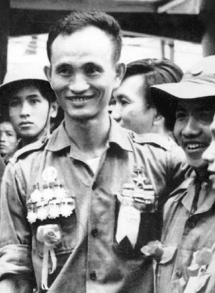

Một buổi sáng đẹp trời 2008, Võ Viết Thanh đem xe đến rước tôi đi Bến Tre với anh. Thanh sinh năm 1943, kém tôi một tuổi, anh khiêm tốn gọi tôi là anh và xưng em. Tôi không hình dung nổi, một con người từng vào sinh ra tử, 17 tuổi đã ngồi tù, dày dạn trên chính trường, bất khuất và gang thép như Võ Viết Thanh lại có dáng vẻ nho nhả, ăn nói từ tốn khiêm nhường như thế. Hôm đó anh nói với tôi, anh vừa xin được một người bạn ngoại quốc trong lúc đánh gôn một số tiền để làm “xóa đói giảm nghèo” cho quê Bến tre của mình. Anh còn than: “Em dại quá, người bạn này hỏi cần bao nhiêu. Em nói 90.000 đô, anh ta gật liền. Bây giờ thấy tiếc, biết thế nói 200.000 có hơn không!” Tôi bảo Võ Viết Thanh: - Ông tham quá, thế là tốt rồi. Trên xe hôm đó còn có một anh chàng Singapore gốc Hoa, nói tiếng Việt bập bẹ vì đã ở Việt Nam lâu năm. Anh chàng này chừng ngoài 50 tuổi, luôn mồm than “nước Singapore chúng tôi hẹp! Việt Nam lớn quá!”. Quả thật sau này tôi có đi Singapore và thấy cái nước này không rộng bằng huyện Giồng Trôm quê Võ Viết Thanh.

… Sau khi làm việc với huyện, với xã, Thanh đưa tôi về nhà anh ở xã Lương Phú. Cảnh sắc quê anh rất thanh bình, êm ả. Mỗi nhà ở trong một vườn dừa rộng mênh mông, mát rượi. Có những cây dừa già nằm ngả xuống đất, muốn đi qua phải bước qua thân dừa mà chủ nhà cũng không muốn chặt. Có lẽ vì nhiều dừa quá. Ở miền Bắc ít đất, vườn nhà thường hẹp, vì thế mỗi lần vô một miệt vườn như ở Bến Tre, tôi cứ thơ thẩn ngắm vườn.
Điểm nhất của chuyến đi này mà tôi không bao giờ quên là trước khi vô nhà ăn cơm, Võ Viết Thanh đưa tôi ra viếng một ông bà già anh. Mộ chí được xây cất ngay trong vườn. Võ Viết Thanh thành kính thắp nhang cúi lạy cha mẹ. Tôi đọc rất kỹ trên bia, hai cụ Võ Văn Nhuận và Phạm Thị Giang đều chết cùng ngày, cùng giờ, 20 giờ ngày 26/8/1962. Thanh nhìn tôi, nói trong uất ức: Một toán lính của chế độ Ngô Đình Diệm, đứng đầu là tên Tổng Giám đồn Long Phú đã giết cha mẹ tôi trên đất này, phía bờ sông kia, ai cũng biết, cả xã, cả huyện này đều biết. Vậy mà “bọn họ” lại bảo là cha mẹ tôi bị cách mạng giết.
Tôi không quên nhờ anh bạn Singapore đi cùng chụp cho tôi và Võ Viết Thanh một tấm hình hai người ngồi bên một chí của các cụ thân sinh ra Võ Viết Thanh. Bức hình tôi đội mũ nồi, Võ Viết Thanh để đầu trần, vầng trán rộng mênh mông tôi còn giữ làm kỷ niệm.
“Bọn họ” mà Võ Viết Thanh nói ở đây chính là Lê Đức Anh, Nguyễn Văn Linh, Nguyễn Đức Tâm, Đoàn Khuê trước Đại hội Đảng lần thứ 7, lập án giả định hại Đại tướng Võ Nguyên Giáp trong vụ án “Bà Sáu Sứ” tai tiếng cả nước, được giao cho Võ Viết Thanh với tư cách là Thứ trưởng Bộ Công an lúc đó đi điều tra và kết luận theo “hướng của trên”, nhưng Võ Viết Thanh đã không làm theo ý họ. Thanh đã điều tra đúng người, đúng tội, tôn trọng luật pháp nên sau đó họ không làm gì được Võ Viết Thanh, bèn nghĩ ra cái “võ” điều tra lại lý lịch của Thanh theo đơn tố cáo và gạt Thanh ra khỏi chính trường. Võ Viết Thanh còn nói cho tôi rõ, theo nguyên tắc thì anh đã là Ủy viên Trung ương nên khóa Đại hội 7 đương nhiên anh được dự. Thanh còn cho biết, khi được phát phiếu bầu ủy viên trung ương khóa mới (7), cái phiếu ghi tên anh chỉ để trắng, không kèm theo chức vụ ủy viên trung ương khóa 6, như mọi ủy viên trung ương khác tái cử. Anh thắc mắc thì Ban tổ chức nói là: - Lỗi in ấn!!! Thanh nói: Tôi định cầm cái lá phiếu ghi tên mình xông thẳng lên diễn đàn và giơ lá phiếu ấy lên để tố cáo sự gian lận này trước toàn thể đại hội, nhưng nghĩ lại nếu làm thế là tôi đã phá cả đại hội, nên tôi thôi!!!
Cô Võ Thị Cẩm Hồng, em ruột của Võ Viết Thanh, khi còn ở Sở Công an Tiền Giang, đã nói với tôi ngay từ năm 1991, lúc đó tôi cũng còn đang thường trú tại Mỹ Tho rằng: Khi là Thứ trưởng Bộ Công an, lúc lấy phiếu tín nhiệm, anh Bảy Thanh được phiếu cao nhất, vậy mà trước Đại hội 7, em thấy anh Tư Bốn (tức trung tướng Nguyễn Việt Thành sau này), Giám đốc Sở gọi em lên bảo khai lại lý lịch thì em biết ngay anh Bảy Thanh của em ở Bộ Công an ngoài Hà Nội đang gặp nạn rồi. Em còn lạ gì cái trò bày đặt đơn tố cáo để bắt khai lại lý lịch, kiểm tra tư cách đại biểu trước Đại Hội, để trì hoãn, để loại trừ nhau trước một Đại hội Đảng.
Sau một ngày về Bến Tre, lúc đó cầu Rạch Miễu qua sông Tiền sang Bến Tre còn chưa được bắc nên lúc về đến Sài Gòn đã tối lại kẹt đường, ngồi trên xe buồn quá Võ Viết Thanh còn đọc cho tôi nghe mấy câu thơ của Verlaine. Tôi hỏi: ông cũng đọc được tiếng Pháp à? Thanh kể: Anh có xem phim “Ván bài lật ngửa chưa?” Trong phim có đoạn tỉnh trưởng Bến Tre lúc đó là Phạm Ngọc Thảo có gọi một thanh niên 17 tuổi đang ở tù ra hỏi cung, ông tỉnh trưởng chỉ hỏi vài câu lấy lệ rồi sau đó thả người thanh niên này ra. Người đó chính là em. Lúc đó em vừa học xong trung học ở Bến Tre.
Hai năm sau cái ngày anh đưa tôi về Bến Tre, Võ Viết Thanh sai cô em Võ Thị Cẩm Hồng lúc này đã lên Sài Gòn làm ở báo Công an TP. HCM đến đưa cho tôi một cuốn sách dầy, khổ lớn, bìa cứng do Nhà xuất bản QĐND, xuất bản 2010 có tên là “Bến Tre đồng khởi anh hùng”. Cùng với cuốn sách đó là một cái đĩa ghi và một lá thư ngắn. Nguyên văn lá thư đó như sau:
“Kinh gửi anh Lê Phú Khải, xem lại cho vui những chuyện đã qua của một gia đình và con người.
Kính thăm anh và gia đình. 19.4.2010. Thân ái (ký tên Thanh)”
Bức thư tôi còn giữ làm kỷ niệm.
Tôi đọc sách, xem đĩa ghi hình, tìm hiểu về gia đình Võ Viết Thanh mà bàng hoàng. Có lẽ trên thế gian này chưa có gia đình nào hy sinh mất mát cho một cuộc cách mạng như gia đình Võ Viết Thanh, sau đó lại chịu những oan khuất, cay nghiệt như gia đình anh. Cả hai vợ chồng ông Võ Văn Nhuận và và Phạm Thị Giang đều là đảng viên Đảng Cộng sản Đông Dương từ những năm 30 của thế kỷ trước, đấu tranh trong Công hội Đỏ ở Ba Son chống Pháp cùng lứa với Tôn Đức Thắng, Dương Quang Đông. Suốt hai cuộc kháng chiến chống Pháp và chống Mỹ, ông bà đều là cán bộ nòng cốt. Ông làm quân giới tận U Minh. Năm 1958, ông bà bị bắt, bị đánh đập tra tấn dã man mà không hề khai báo gì. Sau 3 năm tù ông bà lại được tổ chức đưa về Bến Tre hoạt động bí mật. Đến năm 1962, cả hai vợ chồng người cán bộ kháng chiến này đều bị giết hại thảm khốc cùng một lúc.
Cô Hồng đã kể với tôi, lúc chúng xông vào nhà bắt bố mẹ đi thì cô còn bé quá, ngồi ở thềm nhà chúng không để ý nên thoát chết. Chị cô bụng đang mang thai cũng bị bắt đi nhưng vùng chạy thoát.
Võ Viết Thanh mới 18 tuổi đầu đã mang nặng thù nhà, nợ nước, cha mẹ bị giết, chị em gái và em trai cũng hy sinh. Sau 1975, Võ Viết Thanh về quê tìm bắt được Tổng Gốm, kẻ đã giết cha mẹ anh. Nó quì lạy và anh đã tha cho nó. Anh xông pha lửa đạn, chỉ huy một xưởng quân giới chế tạo ra nhiều vũ khí để diệt tàu Mỹ trên dòng sông quê hương. Trận đánh cầu Cá Lọc của anh được ghi chép trong lịch sử của Bến Tre. Anh từng được phong anh hùng lực lượng vũ trang. Vậy mà chính các “đồng chí” cao cấp của anh lại lập mưu vu khống cha mẹ anh, những người đã yên nghỉ nơi suối vàng, là kẻ phản bội. Còn gì đau xót hơn cho một người Việt Nam là cha mẹ mình đã mất mà còn bị vu oan, vu oan một cách bỉ ổi. Cái thiêng liêng nhất đối với Võ Viết Thanh là linh hồn của cha mẹ mình lại bị đồng chí của mình đem ra bôi nhọ để lấy cớ cho những âm mưu đấu đá quyền lực bẩn thĩu nhất. Nếu Võ Viết Thanh cúi đầu nghe theo bọn họ thì anh sẽ lên quan to hơn, lên làm Bộ trường Bộ Công an, vào Bộ Chính trị. Nhưng anh đã chấp nhận bị vùi dập để đứng thẳng làm một con người chân chính, lương thiện và tử tế. Gia đình Võ Viết Thanh đủ để Shakespeare viết một bi kịch về một cuộc cách mạng ở xứ châu Á xa xôi và hoang dại (sauvage) trong thế kỷ 20! Vậy mà trong thư anh viết cho tôi chỉ nói: “xem lại cho vui, những chuyện đã qua của một gia đình”.
Tôi biết tâm hồn anh đã rã rời với một cuộc cách mạng đang bị phản bội. Anh thấy bẽ bàng cho nó và cho cả những gì mà anh đã cống hiến cho nó với tất cả sự trong trắng của tâm hồn mình. Anh đang nhìn xã hội quay cuồng xung quanh bằng con mắt của kẻ chỉ thấy đời như một giấc mộng phù du của “những chuyện đã qua”.
Gần đây, tôi có gặp anh trong đám cưới con trai của cô em Võ Thị Cẩm Hồng của anh. Vẫn dáng vẻ nho nhã, vẫn giọng nói ấm áp, khiêm nhường, và trên vầng trán mênh mông của anh, tôi như thấy những đám mây buồn đang lãng đãng trôi.
Đầu năm 1994, sau chuyến đi Điện Biên Phủ đầu tiên để giúp anh Tuất Việt làm số báo “SGGP - 40 năm Chiến thắng Điện Biên Phủ”, tôi về Hà Nội và đến báo Nhân Dân gặp Mai Phong, trưởng ban bạn đọc của báo. Tôi bảo với Mai Phong, vừa đi Điện Biên Phủ về, có chai rượu hổ cốt, muốn rủ ông lên chỗ ông Nguyễn Hà Phan ở Ban Kinh tế chơi, gạ ông ấy kiếm ít mồi để nhậu. Anh cho tôi mượn cái điện thoại bàn của anh để gọi cho ông ấy … Mai Phong nhìn chai rượu của tôi, tuy có dán cái “mác” Lai Châu ở vỏ nhưng giá chỉ có 14.000 đồng. Phong nói: ông có đùa không thế, đang giờ làm việc mà đòi lên gặp Bộ Chính trị để nhậu!
Không cần Mai Phong đồng ý, tôi nhấc điện thoại bàn của anh lên (hồi đó chưa có di động phổ biến như bây giờ) gọi cho ông Sáu Phan. Từ đầu giây đằng kia, ông Sáu Phan kêu tôi “lên ngay!”. Thế là tôi kéo Mai Phong lên số 10 Nguyễn Cảnh Chân, khu Ba Đình. Chỗ Sáu Phan ngồi làm việc là trường Albert Sarraut cũ thời Tây.
Quen biết với ông Nguyễn Hà Phan từ lúc ông còn là Chủ tịch tỉnh Hậu Giang cũ, tôi từng được Tổng biên tập Tuất Việt ủy nhiệm làm đặc phái viên của báo SGGP để phỏng vấn ông nhiều lần. Và, tôi cũng hết sức ủng hộ tỉnh Hậu Giang về mặt thông tin tuyên truyền những chủ trương rất đúng đắn của tỉnh dưới thời ông Hà Phan. Vì thế, việc ông Sáu Phan gặp tôi ở Hà Nội là việc vui đối với ổng. Khi chúng tôi lọc cọc chở nhau bằng xe đạp đến nơi thì đã thấy Sáu Phan bày ra vài thứ đồ nhậu khô. Được vài tuần rượu, Sáu Phan rút thuốc ra hút. Đặc điểm lớn nhất, dễ nhận ra ở Sáu Phan là, ông hút thuốc liên tục, hết điếu này nối điếu kia. Sáu Phan mời tôi và Mai Phong hút thuốc. Thấy ông đưa thuốc “mác” “Con ngựa trắng” mời khác thì tôi lấy làm lạ nên hỏi: Khi xưa ông là quan đầu tỉnh mà hút toàn ba số (555) inter, nay lên quan nhất phẩm triều đình lại hút thuốc này sao? Sáu Phan than phiền: - Ra đây Ban Tài chính quản trị trung ương nó cho hút thuốc gì thì được hút thuốc đó. Tiếp khách cũng thế, đâu có được như ở nhà.
Thấy thế, tôi bảo với anh Y, thư ký riêng của Sáu Phan đang ngồi gần đó: Nhờ anh bảo cô Tuyết ở Ban Tài chính qua đây tôi gặp. Y nói: - Ở Ban Tài chính có đến 3 cô Tuyết, nhà báo muốn gặp cô Tuyết nào? Tôi nói: muốn gặp cô Tuyết có chồng là ông Nguyễn Thanh làm bên Hải quan. Anh Y lập tức xua tay nói: - Cô Tuyết ấy là cấp trên của tôi, tôi không dám gọi. Tôi nói: - Thì anh cứ bảo cô ấy, có anh Lê Phú Khải ở miền Nam ra, muốn gặp cô ấy. Lát sau cô Tuyết xuất hiện. Cô em tôi (Tuyết là em họ tôi, con người chú thứ ba của tôi, là Lê Phú Ninh, quyền Chánh văn phòng Bộ Công an) rất vui vẻ: - Em chào bác! Bác mới ở miền Nam ra? Sao không báo em để em đem xe ra sân bay đón bác! Tôi cười nói: - Ra chơi với ông Sáu đây thôi có gì mà phải đón với rước! Sau đó tôi nói: Sao Ban quản trị lại bắt ông Sáu hút thuốc “Con ngựa trắng” thế này? Xưa kia ở Cần Thơ ông ấy toàn tiếp tôi bằng ba số cơ mà?! Cô Tuyết phân trần: - Ban TCQT chúng em liên kết với tỉnh Khánh Hòa sản xuất kinh doanh loại thuốc này, rồi bán lại cho Văn phòng trung ương. Văn phòng phân phối cho các bác ấy tiếp khách. Bác thông cảm! Cô Tuyết chỉ nói có thế rồi chào ông Hà Phan. Trước khi về, cô còn dặn tôi khi nào ra Bắc thăm bác Sáu, nhớ gọi điện để cô cho xe ra đón.
Sở dĩ tôi đề nghị anh Y kêu cô Tuyết sang là có ý muốn giới thiệu với cô quan hệ thân mật của tôi với ông Hà Phan, để cô ấy “ưu tiên” cho “ông bạn” già của tôi. Vì tôi biết các vị như Hà Phan ở địa phương còn sướng hơn cả vua chúa ngày xưa. Nay ra triều đình xa vợ con, nước lọ, cơm niêu là khổ lắm, lại không quen biết ai. Các quan chức ở Hà Nội hết giờ làm việc là về trình diện các quan bà hết, không như ở miền Nam hết giờ là đi nhậu. Cỡ như Sáu Phan, ở Hà Nội lại càng cô đơn(!).
Tuyết về rồi… Sáu Phan bảo tôi:
– Biết đâu cô Tuyết là em ông. Ở đây cô ấy quan trọng lắm, tay hòm chìa khóa của trung ương là ở tay cô ấy!!!
Lê Thị Tuyết sinh năm 1942, cùng tuổi với tôi. Cô sinh ra trong một gia đình đông con. Ông chú tôi có tới 7 người con, cô là thứ 2. Hồi nhỏ trong gia đình Lê Phú của tôi chỉ có tôi là cháu đích tôn là được cưng chiều từ nhỏ, còn các cháu nội của ông bà tôi từ bé đã rất vất vả vì các chú tôi đi cách mạng quanh năm! Gia đình phó thác cho các bà vợ. Cô Tuyết học hành chẳng được là bao, mười mấy tuổi cô đã phải đi gánh nước gạo cho mẹ nuôi lợn ở Bãi Giữa (Bãi Phúc Xá). Cô vào làm nhà nước, được vô nơi kín cổng cao tường này có lẽ là nhờ cái lý lịch “con nhà nòi”. Nhưng cô là người thông minh, có bản lĩnh và rất nhân hậu. Ở địa vị cao (Phó Ban Tài chính quản trị trung ương Đảng), nắm vật chất của Đảng trong tay nhưng cô thẳng thắn, khiêm nhường, tận tụy với công việc, và rất công bằng trong mọi sự phân chia của cải nên được cán bộ công nhân viên của Ban Tài chính quản trị trung ương và Văn phòng trung ương Đảng quí mến. Ngày cô mất, Đại Tướng Võ Nguyên Giáp đã gởi một bức thư dài, chia buồn với gia đình cô. Bức thư ấy tôi đã được đọc. Những lời của Đại Tướng thật chân tình, những đánh giá của Đại Tướng về cô không công thức, giáo điều như mọi nghi thức với một người đã chết mà người ta thường thấy. Những điều ông viết làm người ta phải ngạc nhiên về nhận xét của một nhân vật lớn của đất nước đối với một cán bộ nhân viên bình thường: “Chị Tuyết ra đi để lại một tấm gương sáng của một người cán bộ hết lòng làm tròn nhiệm vụ, một người phụ nữ mẫu mực về lối sống và đạo đức cách mạng. Ký tên Võ Nguyên Giáp”. Lá thư đề ngày 22/2/1999 - Hà Nội.
Riêng đối với tôi, tuy chúng tôi là anh em cùng dòng tộc nhưng ở xa, ít tiếp xúc. Tuy vậy, cô Tuyết có cách cư xử mà tôi cho là chính xác, thông tuệ. Cô biết thừa tư tường “bất đồng chính kiến” của tôi với chế độ mà cô là một quan chức có hạng. Có lần tôi từ miền Nam ra Bắc, đến thăm nhà đấu tranh dân chủ nổi tiếng Nguyễn Kiến Giang nào ngờ lại gặp đúng lúc nhân viên an ninh chuyên theo dõi Nguyễn Kiến Giang đang ngồi ở nhà ông. Anh Kiến Giang liền giới thiệu: - Đây là nhà báo Lê Phú Khải, thường trú của Đài TNVN ở miền Nam ra chơi. Tay an ninh này vốn có tính đa nghi cố hữu của nghề nghiệp nên nghi ngờ tôi ra Bắc để móc nối với Kiến Giang, mời Kiến Giang vào Sài Gòn dự một cuộc hội thảo về dân chủ do một nhóm trí thức Sài Gòn sắp tổ chức. Thế là họ đã lần ra quan hệ họ hàng từ hai chữ “Lê Phú”. Họ đến gặp Lê Quân, em họ, con ông chú thứ 3 của tôi là Lê Phú An, cậu ta là công an an ninh văn hóa để xác minh về nhân thân của tôi. Sau đó, gặp cô Lê Thị Tuyết để nhờ cô khuyên giải tôi đừng quan hệ với “phần tử xấu” Nguyễn Kiến Giang - người từng là cán bộ lãnh đạo của Nhà xuất bản Sự Thật(!). Nhưng cô Tuyết là một người phụ nữ thông minh, hiểu nhẽ đời, cô không hề nói gì với tôi cả, vì biết rõ nói tôi cũng chẳng nghe. Và cũng biết rõ tôi chẳng có gì xấu cho dù là chơi với ông Kiến Giang. Vài năm sau, gặp vợ tôi ra Hà Nội chơi, cô mới kể lại câu chuyện cậu công an gặp cô nói về tôi mấy năm trước. Cô cũng chẳng có lời khuyên nào với tôi nhắn qua vợ tôi, trái lại khi vợ tôi than: - Ở địa phương, cán bộ lãnh đạo khốn nạn lắm, chỉ lo đấu đá quanh năm thì cô nói: - Chị cứ nhân lên 1000 lần sự khốn nạn của địa phương, nó sẽ là trung ương!
Cô em tôi là như thế. Với những người như ông anh họ của cô là tôi, cô “chơi bài ngửa”!, không nói thì ông anh cũng biết, nên cô không cần giấu. Và cô cũng biết, chẳng ai giấu gì được lịch sử! Trong một xã hội như thế, cô phải sống và cô sống tử tế, chân thực với mọi người. Với địa vị ấy, cô phải lo bố trí nhà ở, xe cộ đi về, đến cả chăn mền quần áo cho các vị quan to ở trung ương. Có lẽ vì thế mà cô biết rõ nhân cách của từng vị trong Bộ Chính trị qua những việc cụ thể, đời thường. Khi tôi còn làm phóng viên của Đài Truyền hình VN, có lần gặp tôi, cô nói: - Em thấy các phóng viên của Đài Truyền hình hay sang Văn phòng trung ương nhờ bọn em gọi điện từ Văn phòng trung ương qua đài, đề nghị với giám đốc Đài cử họ đi tháp tùng Thủ tướng đi nước này, nước nọ. Em chẳng thấy bác sang bên chúng em bao giờ! Tôi nói ngay:
– Tôi rất sợ phải đi tháp tùng một vị Thủ tướng vô tích sự như ông Phạm Văn Đồng!!!
Cô em tôi cười rất tươi khi nghe tôi nói thế!
Lúc ông Hoàng Văn Hoan bỏ trốn, tôi cũng đang công tác ở Đài Truyền hình. Báo đài lúc đó la ầm lên là ông Hoàng Văn Hoan phản bội, dấu hiệu phản bội đã thấy rõ từ lâu(!). Gặp tôi cô Tuyết nói ngay Bác Hoan chẳng phản động gì cả. Khi họp Bộ Chính trị, bác Lê Duẩn nói thì các bác Trường Chinh, Võ Nguyên Giáp cứ cắm đầu xuống mà nghe, không dám ngẩng đầu lên, không ai dám nói nửa lời, chỉ có bác Hoan làm dám đập bàn cãi lại, cãi nhau tay đôi(!)
Về trường hợp Hoàng Văn Hoan, tôi cũng được một lần tướng Qua kể như sau:
– Ở Hội nghị Geneve, khi Phạm Văn Đồng kêu ai làm việc thì người đó run lắm, lo chuẩn bị tối ngày, chỉ có ông Hoan là ung dung tự tại hai tay đút túi quần, ra sân đá banh cho đến lúc gặp Phạm Văn Đồng!
Về cái chuyện các phiên họp của Bộ Chính trị thì rất khôi hài. Cô Tuyết kể với vợ tôi:
– Đến em cũng không được vào phục vụ mà chỉ có quyền chỉ huy các nhân viên vào phòng họp phục vụ bưng bê, Các nhân viên đó phải được tuyển lựa từ Cao Bằng, Lạng Sơn về, toàn dân tộc thiểu số để họ không quen biết ai ở Hà Nội, biết gì họ cũng không có ai để mà nói.
Cô Tuyết hóm hỉnh nói với vợ tôi:
– Nhưng chị lạ gì, con gái thì nó phải hành kinh hàng tháng. Khi hành kinh đứa nào cũng muốn thủ trưởng cho nghỉ nhiều, thế là nó phải nịnh em. Mà muốn nịnh em thì chỉ có cách nghe được cái gì trong cuộc họp BCT thì ghé tai em nói nhỏ để làm quà! Đứa nào cũng thế. Vì thế họp gì, nói gì em đều biết hết. Thời Lê Duẩn thì Lê Duẩn mắng mỏ người khác như mắng gia nhân, đầy tớ, đến sau này thì cá mè một lứa, Phan Văn Khải thì bảo Trần Đức Lương nên trả lại những quả đồi mà ông ta đã chiếm để làm villa, biệt thự. Trần Đức Lương thì mắng lại Phan Văn Khải rằng, mày hãy về bảo thằng con mày đừng giết người nữa rồi hãy bảo tao trả lại mấy quả đồi. Họ mắng chửi nhau còn hơn hàng tôm, hàng cá rồi lại khuyên nhau “vì sự ổn định đất nước”, “vì sự nghiệp lớn”, nên gác lại mọi chuyện, rồi lại hỷ hả với nhau, đâu lại vào đó!
Cái thời ông Trần Xuân Bách đưa ra lý thuyết đa nguyên, cô Tuyết còn kể với vợ tôi:
- Trong Bộ Chính trị lúc đó chia rẽ và nghi kỵ nhau lắm, đi họp ai cũng được vợ chuẩn bị một chai nước riêng, để trong túi, khi khát thì lén quay đi, rót uống. Bánh kẹo, nước ngọt bày la liệt nhưng chẳng ai dám đụng vô một miếng. Thế là bọn nhân viên của em nó tha hồ bóc ra để cuối cuộc họp chia nhau vui như tết!!!
Có lần cô Tuyết kể trực tiếp cho tôi nghe, khi cần vụ của Lê Đức Thọ đem một cái chăn bông rách nát đến đổi chăn bông mới, cô nói với chú cần vụ: - Thủ trưởng của cậu tiết kiệm quá, chăn rách cả mền, lòi cả bông ra thế này mới chịu đem đổi. Cậu ta cười nói: - Tiết kiệm cái con tiều! Tối nào trước lúc đi ngủ ông ta cũng nắn bóp cái chăn đến nửa tiếng đồng hồ, chỉ sợ người ta gài mìn thôi nên chăn mới rách bươm ra như thế. Tối qua, bông nó xổ ra, bay tứ tung làm ông ấy ho suốt đêm nên sáng nay mới bảo tôi đem đổi!!!
Chẳng những lo nhà, lo xe, cô còn lo chia quà Tết cho trung ương nữa. Số là, những năm bao cấp, mỗi lần ra họp trung ương, các tỉnh phía Nam còn đem cả tấn gạo ngon, hàng tạ tôm, cá khô ra biếu trung ương ăn Tết. Thế là cô phải thức cả trưa, cả tối để lo chia quà và đem đến từng nhà các vị trung ương.
Lo vật chất, cô Tuyết còn phải lo cả chuyện “tình cảm” cho các vị đó. Cô kể:
- Khi bà vợ hai của Lê Duẩn báo sẽ ra Bắc, thì lập tức cô phải điều bác sĩ đến khám sức khỏe cho bà cả. Rồi theo kịch bản, bác sĩ la lối lên “sức khỏe chị Cả kém lắm rồi, phải đi Tam Đảo nghỉ ngơi!” Khi bác sĩ đến khám, có cả hai nữ công an mặc quân phục, đeo súng bên hông rất oai để “bảo vệ” chị Cả đi Tam Đảo an dưỡng. Thấy mình oai quá, chị Cả đi liền. Thế là tối đó, đưa Tổng bí thư lên biệt thự ở Hồ Tây, chị Hai từ Sài Gòn ra, xuống sân bay là đưa thẳng tới biệt thự! Có lần cô còn tố cáo với vợ tôi: Lê Duẩn tàn độc lắm, có lần ngủ với cô y tá được cử tới để đấm bóp cho ông ta. Sau khi ngủ xong với cô y tá này, ông ta ra hiệu phải. Cô Tuyết nói nguyên văn với vợ tôi: - Em là phụ nữ, có chồng có con, lại theo đạo Phật, không bao giờ em làm điều thất đức.
Lê Duẩn là như vậy. Cuộc tắm máu đồng đội của Lê Duẩn ở Tết Mậu Thân là tội ác trời không dung, đất không tha. Biết là lộ, là thua rồi vẫn cứ lùa quân đi vào chỗ chết. Nhiều chiến binh ở Nam Bộ còn sống sót trong Tết Mậu Thân kể với tôi, quân ta đi đánh thì máy bay do thám của địch bay trên đầu, địch biết hết nên đánh đợt hai đi 100 về chỉ còn 1, 2. Nếu chỉ đánh để làm tan rã ý chí xâm lược của Mỹ, để Mỹ phải ngồi vào bàn đàm phán như bọn bồi bút vẫn hô hoán về trận Mậu Thân 68 thì chỉ cần một mũi tấn công thọc sâu vào Sứ quán Mỹ như ý kiến của Tướng Giáp là đủ.
Hơn ai hết, cô Tuyết ở nơi kín cổng cao tường này nên biết rõ mọi chuyện.
Có lần Nguyễn Văn Linh thấy cô tận tụy với công việc phục vụ đã định đề bạt cô làm Trưởng ban Tài chính quản trị trung ương, nhưng cô từ chối với lý do là phụ nữ, không đủ năng lực làm lớn(!). Khi ông chú ruột tôi là Lê Phú Hào, đại diện Thông tán xã Việt Nam tại Paris, từng phục vụ Lê Đức Thọ - phiên dịch tiếng Anh - tại hòa đàm Paris, đầu năm 1980 ly khai, cư trú chính trị tại Pháp, thì lập tức ông Trần Xuân Bách, Chánh văn phòng trung ương Đảng, đưa vấn đề lý lịch của cô Tuyết ra xét, định vu cho cô là khai man lý lịch vì Lê Phú Hào cũng là chú ruột của Lê Thị Tuyết. Nhưng nằm trong cái “tổ con tò vò” nên cô “rất thuộc bài” và “cao tay ấn”. Ngay ngày đầu tiên được tin chú mình trở thành “kẻ phản Đảng”, cô đã khai bổ sung lý lịch và nộp ngay cho tổ chức Đảng nên ông Trần Xuân Bách chẳng làm gì được cô! Cán bộ ở Ban Tài chính quản trị bình luận về sự việc này là vì cô Tuyết đã có lần dám phê phán cô Thịnh - là vợ trẻ mới cưới của ông Bách, do cô này cậy thế chồng là ông lớn, lộng hành, vô kỷ luật(!). KGB của Liên Xô lúc đó đã gọi Thịnh là Giang Thanh của Việt Nam. Ông Bách trước kia cũng mù mờ như mọi ông trung ương, Bộ Chính trị khác, nhưng từ sau khi ông được trung ương giao cho nghiên cứu tình hình thế giới đang biến động, ông lập một đơn vị chuyên nghiên cứu, dịch sách báo tài liệu nước ngoài cho ông đọc. Đọc rồi ông thấy hoảng quá, tư tưởng ông có chuyển biến nên mới đề xuất đa nguyên, chỉ đa nguyên trong đời sống xã hội, trong tư duy thôi, chưa nói gì đến đa Đảng. Vậy mà ông đã bị khai trừ ra khỏi trung ương(!).
Cô Tuyết cũng có lần kể cho tôi nghe những chuyện thật cảm động, như chuyện ông Hoàng Quốc Việt khi về hưu rồi, theo tiêu chuẩn vẫn được đi nghỉ mát Vũng Tàu (Cơ sở của Ban Tài chính Quản trị trung ương có ở tất cả mọi nơi trên đất nước). Nhưng tuổi già, đi một mình thì buồn lắm, nên ông Hoàng Quốc Việt đã đến xin với cô cho thêm một suất nữa cho ông bạn già của ông là cán bộ thường, không có tiêu chuẩn đi nghỉ Vũng Tàu từ Hà Nội cùng đi. Kể đến đây cô dừng lại rồi chép miệng nói: - Một vị khai quốc công thần như bác Hoàng Quốc Việt mà phải đến tận nơi, xin một cán bộ vô danh tiểu tốt so với công trạng của các bác như em thì buồn quá! Em giải quyết liền. Và từ đó, mỗi lần có bác cán bộ cách mạng lão thành nào đủ tiêu chuẩn đi nghỉ hàng năm, em đều hỏi bác có cần rủ một người bạn già nào nữa cùng đi cho vui không, để cháu giải quyết(!). Nhiều bác mừng lắm, vui như trẻ em. Cô Tuyết cũng nói với tôi về khó khăn trong việc thu hồi nhà công vụ và đồ đạc của Nhà nước khi các cán bộ cao cấp đã thôi làm việc. Cô ca ngợi, chỉ có bác Huỳnh Tấn Phát là ngay sau lúc nghỉ hưu đã gọi cô đến để trả lại ngôi biệt thự số 9, đường Nguyễn Đình Chiểu (nay là trụ sở Hội nhà văn). Bác Phát còn dẫn cô đi từng phòng, kiểm tra từng thứ đồ đạc của Nhà nước còn đầy đủ, nguyên vẹn như lúc nhận nhà sau đó mới trao chìa khóa ngôi biệt thự này cho ban TCQT trung ương.
Nhớ lại chuyện cô Tuyết kể về bác Huỳnh Tấn Phát, tôi lại liên hệ đến lời ông Kiệt nói về lòng yêu nước của trí thức Nam Bộ “họ hy sinh cả một sự nghiệp, một điền trang lớn, vinh hoa phú quí” để đi kháng chiến vì yêu nước. Những người như Huỳnh Tấn Phát, Nguyễn Hữu Thọ, Lương Đình Của, Trần Đại Nghĩa, Nguyễn Khắc Viện đi theo cách mạng không vì tài sản, vì xe hơi nhà lầu mà vì lý tưởng yêu nước cao cả. Còn kẻ khố rách áo ôm đi theo cách mạng thì sau khi cách mạng thành công, họ say sưa cấu xé nhau để tranh giành của cải, tiền bạc, say sưa tham nhũng rồi chính họ lại chết vì cuộc tranh giành đó. Xã hội Việt Nam hôm nay là dẫn chứng hùng hồn điều đó. Cách mạng Pháp 1789 nổ ra khi giai cấp tư sản đang lên, chính nhà vua Louis 16 đã phải vay tiền của các chủ nhà bang để trang trải nợ nần cho triều đình. Giai cấp tư sản chỉ dựa vào sức mạnh bạo lực của đông đảo nông dân đói khổ để lật đổ bọn phong kiến và tăng lữ, sau đó nắm lấy chính quyền, nâng cấp xã hội Pháp từ phong kiến lạc hậu lên xã hội công nghiệp tiên tiến. Bi kịch của cách mạng vô sản là kẻ khố rách áo ôm, dốt nát lại lên nắm quyền. Để che đậy cho sự dốt nát đó, Việt Nam hiện nay có biết bao ông tiến sĩ, giáo sư đã được học tắt, học “đón đầu”, mua bằng giả. Sự dốt nát của đám “trí thức” cận thần này đang làm trò cười cho cả thế giới đã internet hóa mà trường hợp của đại tá giáo sư tiến sĩ Trần Đăng Thanh là một điển hình chẳng kém gì các nhân vật điển hình trong văn học như Chí Phèo, Thị Nở!!!
Lại nói về bữa nhậu với ông Sáu Phan tại Ban Kinh tế trung ương ở Hà Nội năm đó. Chúng tôi lai rai cho đến xế chiều. Trước khi chia tay, Sáu Phan bảo tôi: - Muốn nhờ Phú Khải một việc! Tôi nghe lạ tai quá nên vặn lại: - Ai đời một ủy viên BCT lại phải đi nhờ một công dân hại hai ngoài Đảng bao giờ? Nhưng Sáu Phan quả quyết: - Việc này phải nhờ Phú Khải mới xong!
Đại để là Sáu Phan nhờ tôi nói với Tổng Biên tập SGGP Vũ Tuất Việt xóa nợ cho nhà thơ Nguyễn Bá ở Cà Mau vì vay tiền của báo SGGP mở xưởng làm giấy rồi vỡ nợ, không trả được phải đi tù(!)
Sáu Phan nhấn mạnh, ông thân với Tuất Việt, nói với nó xóa nợ cho Nguyễn Bá. Ông còn nói: - Ai lại bỏ tù một nhà thơ bao giờ. Thả Nguyễn bá ra để nó đi làm ăn mới có tiền mà trả nợ chớ…
Tôi nghe Sáu Phan nói thấy rầu quá! Rõ ràng tư duy của ông là tư duy tình cảm, tư duy đức trị giữa lúc người ta thực thi Pháp trị (tất nhiên là chỉ thực thi Pháp trị với những người như Nguyễn Bá và với dân đen). Tuất Việt đâu phải là tòa án mà tha bổng cho Nguyễn Bá được. Với lại báo Sài Gòn Giải Phóng là báo quốc doanh, đâu phải báo tư nhân của riêng Tuất Việt mà Tuất Việt có thể xóa nợ để cứu Nguyễn Bá khỏi tù tội.
Chính cái tư duy đức trị bảo thủ này đã làm hại Sáu Phan. Khi ở Cần Thơ, Hậu Giang, Sáu Phan là một “anh Hai Nam Bộ” thứ thiệt, cởi mở, phóng khoáng, tư duy tân tiến. Ông nổi tiếng là một người giản dị, dễ gần. Ông có thể tì giấy lên đùi để ký vào một văn bản cho một cán bộ cấp dưới ngay trên hè phố để giải quyết một công việc gấp. Ấn tượng rất mạnh của tôi lần đầu tiên gặp Sáu Phan là, ông chủ tịch một tỉnh lớn nhất đồng bằng này đạp xe đạp vào một tận một ngõ hẻm để thăm tôi tại Cần Thơ. Ngay tại buổi gặp đầu tiên ấy, ông bàn với tôi là phát động một cuộc tuyên truyền trên báo chí cho một năm lấy tên là “Năm văn hóa xã hội” của Hậu Giang. Trong năm văn hóa xã hội đó, sẽ vận động các doanh nghiệp, đặc biệt là các doanh nghiệp kinh doanh xuất khẩu lương thực dành một phần tiền trong quĩ giao tiếp được nhà nước cho phép, chỉ vài phần trăm nhưng rất lớn để xây trường học, trạm xá, làm đường cho vùng sâu, vùng xe của Hậu Giang. Trong cuộc họp báo có mời cả các nhà báo và văn nghệ sĩ ở TP. HCM xuống để tuyên bố mở đầu năm VNXH. Đêm hôm trước, ông còn bàn riêng và hỏi tôi, để thực hiện tiết kiệm, mỗi người dự tiệc chỉ một lon bia thôi có được không? Tôi bảo: - Nên 3 lon, thằng nào không uống được thì thằng khác nó gánh, thế cho vui vẻ, không nên tiết kiệm quá, nhất là có anh em từ xa đến. Ông đồng ý ngay, còn khen tôi là “sâu sắc”!
Về việc đi tù của nhà thơ nổi tiếng của Miền Tây Nam Bộ một thời là Nguyễn Bá, vì vay tiền tỷ để mở xưởng kinh doanh làm giấy, nhưng báo nào năn nỉ xin mua chịu giấy, Nguyễn Bá cũng cho chịu nên vỡ nợ, phải đi tù. Chuyện ông nhà thơ mở xưởng làm giấy này ở Việt Nam chẳng khác nào chuyện ông nhà văn Banzăc ở bên Tây năm xưa, cũng mở xưởng in, kinh doanh được ít lâu là vỡ nợ, phải đi trốn nợ ở lầu 5 một căn nhà phố xép tại Paris. Sau này, chính quyền Paris có mua lại cả căn nhà có phòng Banzăc đã trốn nợ ở đó để làm bảo tang Banzăc! Còn ở nước ta thì hai ông Ủy viên BCT đều tìm cách can thiệp cho một nhà thơ nổi tiếng vì kinh doanh thua lỗ mà phải đi tù(!) Nhưng ông Sáu Kiệt thì khôn ngoan hơn ông Sáu Phan nhiều. Ông đã đến thăm tù nhân Nguyễn Bá với tư cách một công dân nhưng đang “mặc áo” Thủ tướng, chỉ thăm thôi, không can thiệp gì cả. Vậy mà ít lâu sau, Nguyễn Bá được ra tù với nhiều lý do, trong đó lý do chủ yếu là “đã cải tạo” tốt!
Kể từ khi Sáu Phan ra Bắc làm quan to, tôi được nghe nhiều thông tin rằng, ông được các vị ở Hà Nội quí mến lắm vì tính tình giản dị, cần kiệm, chan hòa với mọi người, đặc biệt ông Tổng Bí thư Đỗ Mười rất tín nhiệm.
Từ khi biết tôi có quan hệ thân tình với Sáu Phan, cô Tuyết mỗi lần có dịp gặp đều thông tin cho tôi về Sáu Phan. Có lần cô nói, bác Đỗ Mười nhận xét: - Thằng Sáu Phan cho vào cối giã nó cũng không chết! Một lần khác cô lại nói, bác Đỗ Mười bào: - Kỳ này để thằng Sáu Phan làm Tổng Bí thư để khỏi mang tiếng là cứ cái chức Tổng Bí thư phải do thằng Bắc Kỳ nắm!
Tôi còn được nghe cố vấn Nguyễn Văn Linh luôn đi vận động cho Sáu Phan lên làm Thủ Tướng. Nghe được những chuyện như thế, tôi thấy lo. Được những ông đại bảo thủ, giáo điều, u mê, lú lẫn như thế mà khen thì chắc là Sáu Phan hỏng rồi(!). Đúng là “gần mực thì đen” như các cụ ta nói! Nhưng đó là suy luận theo logic, còn biến động của tư duy lại phức tạp. Engel từng nói, mọi sự vật đều biến động liên tục và vận động trong thời gian và không gian, trong các vận động đó, vận động của tư duy là phức tạp nhất.
Nếu ông Sáu Phan lên nắm các chức vụ chủ chốt trong Đảng như người ta dự đoán thì chưa biết là rủi hay may cho đất nước này, cho Đảng Cộng sản này. Tôi nói vậy vì trước Đại hội 8 tôi có ra Hà Nội. Mỗi năm tôi thường ra một lần như thường lệ. Trước khi về tôi có đến thăm Sáu Phan, tôi nói:
- Ra Hà Nội lâu rồi, trước khi về đến thăm ông Sáu.
Sáu Phan nói:
- Tôi biết ông ra lâu rồi và toàn đến chơi các “thứ dữ”, giờ mới đến chơi tôi.
Thì ra Sáu Phan đã biết tôi ra Hà Nội và đi những đâu. Tôi đành “thú nhận”:
- Tôi vừa đến chơi Nguyễn Khắc Viện, Nguyễn Kiến Giang, Dương Thu Hương.
Sáu Phan nói:
- Thế là tốt. Mai mốt tôi làm việc (ý nói làm lớn hơn) phải nhờ ông làm cầu nối để tôi gặp các vị đó, đối thoại với anh chị em.
Ông còn khoe:
- Tôi là người bảo lãnh để anh Phan Đình Diệu tham gia Mặt trận Tổ quốc, trong khi các vị khác phản đối ầm ầm.
Sáu Phan đã nghĩ đến đối thoại với những người tôi vừa kể trên từ những năm đó thì không thể xem thường ông ta được (Sáu Phan còn sống đó). Trên chính trường, sự im lặng chờ đợi đôi khi cần thiết hơn là sự bộc lộ quan điểm rõ ràng mà sớm quá. Người Phương Tây có câu ngạn ngữ: “Ai nói đúng sớm quá là sai lầm” (Ceuy qui ont raison trop tot, on tort).
Khi ông Sáu Phan thất sủng, bị khai trừ ra khỏi Đảng vì lý do như thông báo của Đảng CSVN đến từng chi bộ, tôi là một trong những người đến thăm ông sớm nhất tại số nhà 14, đường Nguyễn Trãi, Cần Thơ. Ông rất cảm động và còn đưa tôi vào buồng, giới thiệu tôi với bà vợ đang bị bệnh nằm đó:
- Đây là anh Khải ở báo Nhân Dân đến thăm tôi!
Sáu Phan ít nghe đài, đọc báo là chủ yếu nên cũng như nhiều người, vẫn đinh ninh tôi ở báo Nhân Dân. Và chính vì sự nhầm lẫn này đang gây cho tôi nhiều chuyện rất vớ vẩn(!) Một lần chín giờ đêm rồi, tôi còn được cơ quan mang đến cho một bao thư to, đề ngoài người gửi là Văn phòng Chính phủ, người nhận là Lê Phú Khải, địa chỉ báo Nhân Dân. Thấy đúng tên mình, tôi bóc thư ra xem thì nội dung đại ý Văn phòng CP đã nhận được đơn của nhà báo Lê Phú Khải, kiện ông Trương Tấn Sang đã bắt con ông đi nghĩa vụ quân sự không đúng luật v.v. Tôi biết ngay là người ta lộn tôi với ông Trần Quốc Khải ở báo Nhân Dân nên sáng hôm sau tôi phải phóng xe tới 40 Phạm Ngọc Thạch trao trả lại thư cho báo Nhân Dân.
Đến dịp 30-4-1995, sắp kỷ niệm 20 năm ngày thống nhất đất nước, tôi được cử đi phỏng vấn Chủ tịch TP HCM Trương Tấn Sang. Cuộc phỏng vấn xong, ông Sang vỗ vai tôi bảo:
- Thôi chuyện cũ kiện cáo nhau, bỏ qua nhé!
Tôi ngạc nhiên quá và vụt nhớ ra là vụ kiện ông Sang của ông Trần Quốc Khải ở báo Nhân Dân mấy năm trước. Vậy là VPCP cũng gửi cả công văn thông báo vụ kiện cóa đó cho Chủ tịch TP. HCM Trương Tấn Sang. Tôi phải giải thích sự nhầm lẫn này cho ông Sang hay. Cả hai chúng tôi đều cười! Công bằng mà nói, ông Sang là một người tử tế. Nếu ông nhỏ nhen mà thù ghét tôi thì thiếu gì cách để ông “trị” tôi!
Chưa hết, một lần tôi xuống một huyện xa của Sóc Trăng công tác, tối đêm rồi còn có người gõ cửa phòng, yêu cầu tôi hoàn trả lại số tiền tạm ứng nhận viết một cuốn tiểu thuyết cho huyện mà đã mấy năm không thấy tiểu thuyết ra đời! Tôi lại biết ngay là nhầm tôi với ông Trần Quốc Khải.
Còn nhiều chuyện rắc rối do ông Trần Quốc Khải, nổi tiếng là “hâm” trong làng báo VN này gây cho tôi.
Chuyến thăm Sáu Phan vừa bị “tai nạn” chính trị đó, tôi thấy ông tỏ ra không buồn rầu, bi quan gì cả, ông chỉ than phiền:
- Tôi chẳng khai báo gì cả, nó vặn cả răng tôi đây này - Ông chỉ vào hàm răng của mình - Nhà thơ Viễn Phương và nhà văn Sơn Nam bị tù và giam cùng xà lim với tôi hai vị đó đều là bạn của Phú Khải, thử hỏi hai người đó xem tôi có khai không? Viễn Phương viết thư cho anh Mười (Đỗ Mười - LPK) minh oan cho tôi, thư của hắn còn đem ra phường công chứng chữ ký nữa, trước khi gửi đi Hà Nội.
Tôi suýt bật cười khi nghe Sáu Phan nói “đem ra phường công chứng chữ ký”. Ở cái thời buổi “kim tiền” này, người ta đi công chứng chữ ký của các đại ca, đại gia ai mà đi công chứng chữ ký của nhà thơ, vậy nhà thơ có giá thế sao?
Về Sài Gòn rồi, tôi nhân danh chuyên viên của cơ quan, làm giấy mời nhà thơ Viễn Phương đến số 7 Nguyễn Thị Minh Khai, nơi cơ quan tôi đóng để phỏng vấn nhà thơ về tình hình thơ ca miền Nam!!! Tôi phải “mở ngoặc” nói rõ về cái chức danh “chuyên viên” của tôi. Không hề có chức danh này ở cơ quan báo chí, chỉ có phòng viên, biên tập viên mà thôi. Nhưng vì lúc đó tôi đã 55-56 tuổi, có tên trên nhiều tờ báo của cả nước, là tác giả của hàng chục đầu sách, được mời đi giảng ở nhiều lớp bồi dưỡng nghiệp vụ báo chí, lớp trung học, đại học báo chí mà ở cơ quan thì viết một cái tin ngắn củng phải trình cho cấp phó phòng, trưởng phòng duyệt theo qui chế. Kẻ ngồi duyệt được thiên hạ bình luận là trình độ “dân phòng”, nên nó chướng quá. Giám đốc cơ quan thường trú Đài Tiếng nói VN tại Tp HCM là Đào Quang Cường lúc đó liền sáng kiến ra chức danh “chuyên viên”. Ông tuyên bố với cơ quan tôi là chuyên viên, làm việc trực tiếp với giám đốc, khi nào giám đốc yêu cầu thì đến, không phải làm việc 8 tiếng ở cơ quan. Thế là tôi được ở nhà để “nghiên cứu”!!!
Phỏng vấn qua loa nhà thơ Viễn Phương, và sau đó không quên gửi ông cái nhuận bút ở mức cao nhất của qui định trả nhuận bút nhà nước ban hành, tôi mới hỏi nhà thơ rất đáng kính này:
- Tôi nghe nói cái thư anh minh oan cho anh Sáu Phan gửi cho ông Đỗ Mười, anh còn cẩn thận đi công chứng chữ ký Viễn Phương phải không?
Viễn Phương trừng mắt qua cặp kính trắng nói gọn lỏn:
- Có chứ! Có chứ!!!
Sở dĩ những người như tôi, còn dám “… nán lại cái phút giây cực lực, để sống thêm ít phút nhọc nhằn trên cõi đời ôn trọc này…” (Sêchxphia) là vì còn những người “ngây thơ” như nhà thơ Viễn Phương. Chắc chắn ông Viễn Phương mà đi buôn bán, kinh doanh thì lại vỡ nợ, vô tù hoặc phải đi trốn nợ như ông Nguyễn Bá và ông Banzăc mà thôi!
Từ khi Sáu Phan “về vườn” ở Cần Thơ, tôi thường hay lui tới chơi với ông. Vì thế có lần ông bảo tôi: - Ở cái tỉnh Cần Thơ này, nhiều cán bộ bảo tôi chơi thân với Phú Khải, tôi bảo chúng nó “thì hai thằng ngoài Đảng chơi với nhau là đương nhiên”! (Sáu Phan lúc đó đã bị khai trừ Đảng).
Vậy mà ngày Mùng Hai Tết Quý Tỵ 2013 vừa qua, tôi đến chúc Tết… ông còn than với mọi người có mặt lúc đó tại nhà ông: - Lúc tôi là Ủy viên Bộ Chính trị, tôi bảo Phú Khải để tôi giới thiệu Phú Khải vào Đảng, tôi mà giới thiệu thì chi bộ nào nó chả kết nạp, vậy mà Phú Khải không nghe. Bây giờ vẫn là người ngoài Đảng(!).
Thế đó. Sáu Phan là bi hay hài xin bạn đọc suy xét hộ tôi. Chuyện về Sáu Phan còn dài dòng lắm, nếu tôi là một tiểu thuyết gia, có thể có cả một cuốn truyện bi hài về ông và cả tôi nữa. Ví như cái thư ông gửi cho tôi năm 1995, được đạo diễn Trần Cương ở Đài Truyền hình VN tự tiện bóc ra, rồi đem đọc cho mọi người nghe, rồi anh ta rêu rao rằng: - Ai đời một ủy viên BCT đương kim mà lại đi nhờ một thằng ngoài Đảng, ba lăng nhăng như thằng Phú Khải góp ý “nhiều mặt khác cho Đảng”! Cái Đảng này nó đến ngày mạt rồi. Đi rêu rao chán, rồi anh mới đem lá thư đã bóc trả cho tôi. Tôi bảo anh: - Theo luật thư từ, nếu tôi kiện, anh phải 6 tháng tù giam! Trần Cương lại nhe răng cười! Trong làng báo ở Sài Gòn ai cũng biết, Trần Cương là anh chàng suốt đời bông phèng như thế, dù anh được đào tạo căn cơ ở Liên Xô về báo chí, nói Tiếng Nga như gió. Anh hơn tôi 2 tuổi.
Cái thư Sáu Phan gửi cho tôi từ Hà Nội, dấu bưu điện trên bao bì thư đề ngày 15.4.1995 - 10000A, nguyên văn như sau:
“Được anh gửi cho bài nói về 20 năm Đồng bằng Sông Cửu Long, tôi xem thấy hay, chụp gửi cho các anh lãnh đạo và Tiểu ban chuẩn bị văn kiện đại hội 8.
Rất cần được anh góp ý nhiều mặt khác cho Đảng.
Chúc anh, gia đình, bạn bè khỏe mạnh. Thân mến”.
Ký tên Sáu Phan.
Cái bài nói về “20 năm Đồng bằng sông Cửu Long” như Sáu Phan nhắc đến nó trong thư, tôi đã đưa báo SGGP đăng dịp 30.4.1995 trong hai số báo ngày 18.4.1995 và 19.4.1995.
Cũng như quan hệ với ông Sáu Kiệt, tôi đi lại với Sáu Phan là nhằm tìm hiểu những vấn đề của ĐBSCL mà 2 ông đều là những cuốn từ điển sống về vùng quê sông nước này.
Với đại đa số nhân dân và những người ngoài Đảng như tôi thì những đấu đá quyền lực nội bộ trong Đảng, người ta ít quan tâm. Vấn đề tôi quan tâm là những người lãnh đạo của đảng cầm quyền khi ở vị trí cao nhất, họ có quan điểm thế nào? Sẽ dẫn dắt đất nước đi về đâu? Nhân dân sẽ được lợi gì trong những chính sách họ ban hành ra? Xét từ tiêu chí đó thì việc đánh giá cuộc đời và sự nghiệp của Nguyễn Hà Phan còn bỏ ngỏ. Vì ông chưa được “làm việc” như ông đã nói với tôi. Còn những người đã được đảng cầm quyền giao việc, giao nhiệm vụ thì nhân dân đã rõ(!).
Ngày 1-7-1997, Hồng Kông sẽ được trao trả về cho Trung Quốc. Đây là một đề tài hấp dẫn mà báo chí ở TP. HCM rất đói tin tức, bài vở, hình ảnh thời sự về Hồng Kông (nơi được coi là nhiều đầu mối tin tức nhất thế giới).
Đã hơn 10 năm từ ngày “đổi mới” (1986), trên thực tế Việt Nam chỉ đổi mới một phần về kinh tế như cho các thành phần kinh tế tư nhân được hoạt động, kinh tế quốc doanh vẫn nắm cái chủ chốt còn các mặt khác của đời sống xã hội vẫn như cũ. Với báo chí thì là số không. Không hề có báo tư nhân. Báo quốc doanh thì các nhà báo chỉ là một anh viên chức ăn lương tháng để viết tin, bài. Một sự kiện như Hồng Kông được giao về cho Trung Quốc thì các báo chí chỉ chờ dịch tin, bài của báo chí nước ngoài (biên tập lại). Hầu như không có báo, đài nào cử phóng viên tận nơi quan sát để viết tin bài. Chế độ trả nhuận bút của các báo, đài chỉ có tính chất tượng trưng, và trả theo số lượng chữ của bài báo, không trả theo chất lượng tin, bài. Nếu có ông to, bà lớn nào viết bài cho đài báo thì các Tổng Biên tập nịnh khéo quan trên, sẽ trả một số tiền lớn hơn nhiều so với các bài khác. Vì thế, có ông cứ tưởng nhuận bút như thế thì các nhà báo sống khỏe(!). Có lần Thứ trưởng Bộ Thủy Lợi Nguyễn Giới Việt viết một bài cho một tờ tạp chí trong ngành của ông, lúc lãnh nhuận bút ông thấy những một triệu đồng (vào đầu những năm 90), lớn quá, ông không nhận. Sau này ông tâm sự với tôi: - Mình nghĩ là họ hối lộ một cách tế nhị nên từ chối! Những ông Thứ trưởng như Nguyễn Giới tôi biết là có thật và chỉ có vào thời điểm ấy. Bây giờ, chạy một chân Thứ trưởng phải cả chục tỷ đồng thì có trả nhuận bút bằng một cái xe Toyota đời mới họ vẫn chê ít(!).
Xét một cách toàn diện, kể cả chế độ trả nhuận bút, Việt Nam vẫn chưa có báo chí đúng nghĩa của nó. Năm 1994, tôi bỏ tiền túi ra đi Điện Biên Phủ, lúc về viết hàng chục cái tin, bài, phóng sự ảnh cho nhiều số báo của SGGP ra hàng ngày và Tuần san SGGP thứ 7 cùng nhiều báo khác nữa ở ĐBSCL, nhưng nhuận bút lãnh về cũng vẫn chưa đủ chi phí cho chuyến đi ĐBP. Tiền vé máy bay từ Sài Gòn ra Hà Nội, rồi từ Hà Nội lên Điện Biên, tiền ăn ở khách sạn, mua phim ảnh, rồi quay về lại Sài Gòn.
Vậy mà đầu năm 1997, tôi lại quyết định bỏ tiền túi để đi Hồng Kông với tham vọng viết được những tin, bài, ảnh nóng hổi cho báo chí thành phố sôi động này nhưng lại đói tin tức dịp Hồng Kông được trả về Trung Quốc.
Tôi đi theo tour của Công ty Du lịch V.Y.C. (Travel Company TPHCM). Lịch trình của tour này là từ Sài Gòn đi Quảng Châu, Thẩm quyến, Hồng Kông, Ma Cao rồi lại trở về quảng Châu, Sài Gòn. Tất cả là 8 ngày. Nhưng ngày ở Trung Quốc tôi dưỡng sức, nằm nhà nghỉ, dành toàn bộ sức lực để làm việc trong 2 ngày ở Hồng Kông. Tôi tách đoàn, đi chụp hình ở các chợ, đường phố, tìm gặp Việt Kiều để hỏi chuyện, phỏng vấn các nhân viên ở khách sạn qua phiên dịch là anh hướng dẫn viên của VYC. Chuyến đi này thấy tôi là nhà báo nên đoàn bầu làm trưởng đoàn, được ngủ cùng phòng với hướng dẫn viên nên cũng thuận tiện khai thác tư liệu. Tôi gom tất cả các báo hàng ngày bằng tiếng Hoa và tiếng Anh ở khách sạn được phát không để về nhà nhờ bạn bè dịch, khai thác tư liệu.
Kể từ đầu năm 1997, nhất là gần đến ngày 1.7. năm đó, tin bài phóng sự, phóng sự ảnh của tôi về Trung Quốc và Hồng Kông liên tục xuất hiện trên các báo, vậy mà, tiền nhuận bút thu về cũng không đủ chi phí cho chuyến đi hơn một ngàn đôla mỹ. Có thể nói tôi là nhà báo đầu tiên ở Việt Nam đã làm một cuộc thử nghiệm điều tra về chế độ nhuận bút hiện hành ở Việt Nam lúc đó với bài toán “tự đầu tư - tự trang trải”. Và, tôi đi đến kết luận: Nhà báo VN không thể sống bằng nhuận bút như nhà báo ở các nước tự do khác. Nhà báo ở VN vẫn là công chức ăn lương tháng, đi đâu thì ăn nhờ ở đậu nhà khách các địa phương, viết theo lời cán bộ địa phương nói. Rời cái bầu vú bao cấp ấy ra là chết liền. Sau này, kinh tế thị trường định hướng XHCN phát triển mạnh thì cái quái thai này sinh ra các tờ báo sống chủ yếu bằng quảng cáo, đi chạy quảng cáo để ăn phần trăm. Một số nhà báo giàu tấng lên, tậu được xe hơi, nhà lầu vì chủ yếu là đi dọa dẫm các doanh nghiệp, tống tiền các đại gia vì họ sợ bị vu khống, bị bới móc các bí mật trốn thuế của họ. Nếu họ bị vu oan thì không được đính chính. Nếu buộc phải đính chính thì chỉ được vài dòng lí nhí ở trang tư, còn khi vu cáo họ thì đem lên trang nhất. Tôi sẽ còn nói nhiều về thực trạng này ở phần sau.
Hiện tôi còn giữ đến 3kg biên lai nhuận bút (dù chỉ là một phần nhỏ lưu giữ được) của gần 30 năm làm báo “lề phải”. Ví dụ: Phiếu trả nhuận bút của Báo Lao Động, bài và ảnh 15.000 đồng, đề ngày 15/5/1990. Báo Tuổi Trẻ: 20.000 đồng, đề ngày 4/8/1990; Báo Nhân dân đăng bài và ảnh về huyện Cao Lãnh: 150.000 đồng, đề ngày 5/1/1999; Báo SGGP: 700.000 đồng, ngày 28/11/2004 nhưng phải trừ thuế thu nhập cá nhân 10%, còn 630.000 đồng. Nếu bạn sinh viên khoa báo chí nào cần viết luận văn về đề tài nhuận bút báo chí ở Việt Nam qua các thời kỳ, tôi xin tặng 3kg hóa đơn chi trả nhuận bút này làm tài liệu nghiên cứu.
Nhưng tất cả các nhuận bút đó cũng không “cứu” được tôi nếu không được lãnh lương tháng ở Cơ quan Đài TNVN. Đó mới là thực chất bi hài của cái gọi là nhà báo ở Việt Nam: Nhà báo ăn lương của Đảng.
Của đáng tội bù lại chuyến đi viết về một sự kiện mà nhuận bút không bù được chi phí cho chuyến đi đó, tôi được “lời” là được “cưỡi ngựa xem hoa”, được tận mắt xem hai bông hoa của tư bản “giãy chết” là Hồng Kông thuộc Anh và Ma Cao thuộc Bồ Đào Nha.
Từ lục địa Trung Hoa, qua Hồng Kông và từ Ma Cao về lại Quảng Đông (Trung Quốc) đều phải làm thủ tục xuất nhập cảnh vì Hồng Kông là của Anh, Ma Cao là của Bồ Đào Nha như đã nói ở trên. Chỉ riêng làm thủ tục xuất nhập cảnh ở các cửa khẩu thôi cũng thấy được sự thối nát, trì trệ của bộ máy nhà nước Cộng hòa Nhân dân Trung Hoa. Nó không khác gì ở Việt Nam. Các nhân viên an ninh và hải quan Trung Quốc như những con quái vật. Họ vừa làm việc vừa nói chuyện bả lả với nhau, nhìn khách du lịch như muốn ăn thịt người ta. Khi từ sân bay Bạch Vân xuống, đóng dấu vào hộ chiếu của tôi thì vì vừa nói chuyện riêng vừa làm việc nên họ đóng nhầm dấu… Qua trạm thứ hai thì cậu hướng dẫn viên của VYC phải đưa tôi đến hải quan để đóng dấu lại và họ phải đóng dấu áp lại vào giữa hai dấu đã đóng đó. Nhưng đã có dấu áp lại rồi tôi vẫn luôn bị hoạnh họe khi qua các cửa khẩu. Chưa hết, khi từ Ma Cao về lại Quảng Đông, qua cửa khầu của thành phố Chu Hải, hướng dẫn viên VYC cầm một xấp 12 cái hộ chiếu để đóng dấu nhập cảnh, nhưng vừa làm việc vừa nói chuyện riêng với người ngồi bên cạnh, cô nhân viên an ninh bỏ sót hộ chiếu của tôi không đóng dấu. Thế là đến ngày về tôi bị gạt lại không cho ra sân bay vì thiếu một cái dấu nhập cảnh từ Ma Cao vào lại Quảng Đông. Cô nhân viên du lịch TP Quảng Châu, công ty liên kết với du lịch VYC trình bày đến rã bọt mép với công an cửa khầu là chúng tôi đi một đoàn du lịch, có danh sách đoàn đi do tôi là trưởng đoàn, yêu cầu họ chỉ gọi một cú điện thoại về cửa khẩu Chu Hải để xác minh là đoàn đã vào lại lục địa ngày giờ ấy. Nhưng bọn công an cửa khầu chỉ đứng cười. Cuối cùng là tôi và cả anh nhân viên của VYC và cô nhân viên du lịch của Quảng Châu phải thuê xe đi hàng trăm cây số về lại Chu Hải để xin một cái dấu. Đến nơi, bật vi tính lên, họ thấy tôi có tên trong sanh sách nhập lại Chu Hải nhưng quên chưa đóng dấu vào hộ chiếu. Họ đóng dấu lại và thản nhiên không một lời xin lỗi. Chúng tôi phải tá túc lại Quảng Châu ba ngày nữa để chờ máy bay về. Khi về, qua cửa khẩu, lại bị họ hoạnh họe vì sao hộ chiếu nhiều dấu đóng thế? Ngày về sao lại không đúng với giấy phép của chuyến đi du lịch? V.v. và v.v.
Nhìn những gương mặt của công an cửa khẩu, nhân viên hải quan Trung Quốc, tôi thấm thía đến từng lỗ chân lông sự “ưu việt” của chính quyền công-nông, của Đảng Cộng sản Trung Quốc.
Trái lại, từ lúc đặt chân lên Hồng Kông thì mọi sự khác hẳn, các nhân viên khách sạn nơi chúng tôi ở đưa hành lý cho khách đến từng phòng, lễ độ và vui vẻ hết sức. Phỏng vấn ai họ cũng vui vẻ trà lời. Cuốn sổ tay của tôi ghi kín hai ngày ở Hồng Kông.
Hồng Kông là trung tâm giao dịch tài chính lớn của thế giới thì ai cũng biết, nhưng đây còn là một thị trường thông tin, tin tức lớn nhất thế giới. Ở đây, mỗi buổi sáng ngủ dậy anh có thể biết ngay những gì mới xảy ra trong đêm hôm qua cho đến lúc anh tỉnh dậy. Những cuốn sách lớn mới ra lò, kể cả những cuốn tiểu thuyết ăn khách nhất thế giới cũng được người ta tóm tắt ngay nội dung để chào bán cho anh. Nếu có tiền ở Hồng Kông người ta có thể mua được tất cả mọi tin tức trên thế giới. Có cả những “hãng” sản xuất thứ hàng hóa thông tin này để bán cho anh đặt mua hàng tháng hay hàng ngày. Vì thế các hãng thông tấn lớn trên thế giới đều đặt phóng viên thường trú tại đây. Mật độ nhà báo thế giới ở đây thuộc vào loại cao nhất. Chính người chú ruột của tôi là nhà báo Lê Phú Hào đã chờ đợi nhiều thời gian để Thông tấn xã Việt Nam xin đặt ông thường trú ở tại đây nhưng không được. Cuối cùng, vào những năm 60, ông phải từ Bắc Kinh qua Anger (Angiêri) để thường trú và sau đó qua Paris làm phiên dịch tiếng Anh cho Lê Đức Thọ tại hòa đàm Paris.
Nếu ai hỏi tôi ấn tượng nào mạnh nhất khi ở Hồng Kông thì tôi nói ngay là dịch vụ ăn uống. Buổi sáng, cả Hồng Kông ăn sáng rào rào. Có nhà hàng nổi ở Hồng Kông có thể tiếp 3.000 thực khách một lúc. Vào một cửa hàng ăn sáng ở Hồng Kông thấy nó rộng như sân vận động và được chăng đèn, kết hoa đỏ đến nhức mắt. Các nhân viên chạy bàn 100% là thanh niên. Phụ nữ không đủ sức làm công việc nặng nhọc này. Tôi vừa thấy một tốp khách chừng hơn 10 người ăn sáng xong đứng dậy thì lập tức 4 nhân viên chạy bàn lao tới cầm 4 góc khăn trải bàn nhấc bổng lên rồi túm 4 đầu khăn lại, bát đĩa kêu loảng xoảng bên trong. Họ vứt cái đống bát đũa ấy lên một cái xe đẩy và lập tức trải ngay khăn trải bàn mới, bát đũa mới được bày ra, xe đẩy thức ăn lăn tới. Thế là bắt đầu cho một tốp ăn khác. Nhanh như điện. Tính chuyên nghiệp của các dịch vụ ở Hồng Kông thật cao.
Ở Ma Cao thì mỗi khách sạn đều để lầu 1 làm sòng bạc (casino). Chiều thứ 7, dân Hồng Kông lũ lượt đi phà qua một eo biển rộng 70 km để sang Ma Cao đánh bạc. Tiếng là đi phà nhưng cái phà này còn sang hơn cả máy bay. Nhưng vì nó chạy tốc độ quá nhanh và biển lại sóng lớn nên nhiều hành khách nôn mửa vì say sóng. Có điều lạ, các sòng bạc ở Ma Cao đa số là phụ nữ chơi bạc. Các bà, các cô sát phạt nhau trong những căn phòng rất rộng và im lặng trật tự. Tôi đã đổi 100 đô la Mỹ để thử vận hội nhưng chỉ biết quay lô-tô, và thua sạch. Các hình thức chơi bạc rất đa dạng. Tôi ghi chép đủ các loại hình này để viết được một phóng sự “đánh bạc ở Ma Cao” sau này. Có điều là, tuyệt đối người ta không cho chụp hình trong các sòng bạc. Các cô gái Đông Âu, Ba Lan, Tiệp Khắc, Bun-ga-ri dạt sang Ma Cao làm nghề mại dâm và mùa xếch-xi thời điểm đó rất nhộn nhịp.
Trò đời, cái rủi bao giờ cũng đi liền với cái may. Nhờ phải ở lại Lãnh sự quán ta tại Quảng Châu, tôi lại làm quen được với ông Tổng lãnh sự. Ông là người Thái Bình, từng họ ở Trung Quốc, có máu mê văn nghệ. Trên bàn của ông có hàng xấp báo Văn nghệ của Hội Nhà văn. Khi biết tôi là nhà báo, lại biết được tên ông vủi vẻ bắt tay tác giả của nhiều bài bút ký về ĐBSCL ký tên tôi. Ba ngày ở lại Quảng Chau thật không uổng. Tôi thu thập được nhiều thông tin về thành phố này và Hồng Kông qua ông Tổng lãnh sự. Tôi còn lê la gặp được nhiều Việt kiều trên 50 tuổi. Ngày nào tôi cũng thấy họ đến rửa tách chén, lau nhà cho tòa Lãnh sự. Hỏi ra mới biết đó là hai anh em ruột lưu lạc sang Quảng Châu đã mấy chục năm. Cả anh và em đều lấy chồng lấy vợ người bản xứ, nhưng vì nhớ quê hương nên ngày nào cũng đến Lãnh sự quán VN lau sàn, dọn dẹp như làm việc nhà. Tôi lân la hỏi, được biết con cái họ đã lớn, không nói sõi tiếng Việt, nhưng chúng đã từng về Quảng Ninh tìm họ hàng, dẫu chưa gặp. Có đứa còn vào tận Sài Gòn để tìm. Thế mới biết, cái tình quê hương xứ sở của người Việt ta thật sâu nặng.
Chiếc máy bay hành khách cỡ lớn số hiệu AF255 sau 12 giờ bay liên tục từ Singapore nặng nề hạ cách xuống sân bay Charles De Gaulle. Đồng hồ chỉ 6 giờ 20 phút sáng (9.2.2001). Mưa nặng hạt. Nước chảy ròng ròng bên ngoài mặt kính ô cửa sổ máy bay. Hành khách được thông báo ngoài trời lúc này là 5 độ C. Lấy được hành lý rồi, tôi ngồi ngay lên hành lý của mình để nghỉ sau chuyến bay dài mệt nhọc. Ngồi nghỉ ngay giữa dòng người tay xách, nách mang, đi lại tất bật trước mặt mình, bỗng dung tôi nghĩ đến cái ông tướng được lấy tên đặt cho đến 2 cái sân bay vào loại lớn nhất thế giới (Charles De Gaulle I và II). Với người Pháp, tướng De Gaulle và sau này là Tổng thống De Gaulle (1958-1969) là bậc anh hùng cái thế. Các sử gia Pháp không ngần ngại gọi ông là “con người chói lọi nhất nước Pháp”. Ông có tính kiêu ngạo bẩm sinh. Cái “đức tính” đó được nhân lên cùng với thời gian của một con người ý thức được khả năng, vai trò cũng như cống hiến của mình đối với đất nước (Phan Quang). Người Pháp luôn nhớ những câu nói kiêu hùng của ông: “Tôi được sự ủy nhiệm của nước Pháp”, “Tôi cán đáng nước Pháp”, “Tôi là nước Pháp”, “nước Pháp là tôi”!
Nhưng lịch sử thật trớ trêu. Một con người có thể là anh hùng cái thế với dân tộc này, lại có thể là kẻ thù của một dân tộc khác. Đối với tôi chẳng hạn, kẻ đang ngồi suy tưởng lúc này thì De Gaulle chỉ là một tên thực dân ngoan cố không hơn không kém. Vì sao vậy? Đơn giản là vì tôi là một người Việt Nam. Trong Thế chiến II, Pháp thua Đức ngay từ đầu. Mùa hè năm 1940, quân Đức kéo vào, Paris bỏ ngỏ. Tổng thống Albert Lebrun trao quyền cho Thống chế Pétain, ông này đầu hàng Đức. De Gaulle bay sang Anh kêu gọi kháng chiến qua đài BBC. Ấy vậy mà khi Thế chiến II còn chưa kết thúc, chính De Gaulle đã chỉ thị phải chuẩn bị những con tàu đem quân viễn chinh sang tái chiếm Việt Nam kịp thời! Chính vì thế mà Tết Giáp Thân 1944 cụ Hồ đã công bố bức thư ngỏ: Trả lời cho bọn De Gaulle!
Mãi suy nghĩ, tôi không hay những người ra đón đang đứng trước mặt tôi.
Bầu trời xám xịt, mưa tầmn tã và rét đến buốt xương. Trên đường vào Paris, xe hơi phủ kín mặt lộ. Vậy là tôi đang đi giữa Paris, cái thành phố mà từ tuổi nhỏ đã được nghe ông nội tôi kể về nó, khi cụ cùng phái đoàn của Vua Khải Định sang Pháp dự Hội chợ Triển lãm thuộc địa Marseille năm 1922.
Sở dĩ tôi có được chuyến đi này là do sự can thiệp của Cố vấn ban Chấp hành Trung ương Võ Văn Kiệt, một việc có tính ngẫu nhiên. Mà xét ra thì cuộc đời con người ta đa phần là do sự ngẫu nhiên tạo nên. Hôm đó, tôi đang ngồi nhà nghiên cứu” theo chức năng “chuyên viên”(!), bỗng nhận được điện thoại (bàn) của giám đốc Cường, mời lên cơ quan có “việc gấp”! Tôi định không đi vì ông này hay kêu tôi lên cơ quan để nhậu buổi trưa cho vui, với những cú điện “lên gấp” có việc! Nhưng linh tính báo cho tôi hôm ấy phải đi. Lên đến nơi, ổng đưa cho tôi một số điện thoại di động ghi trên một mẩu giấy nhỏ, bảo tôi liên hệ với số điện thoại đó để hẹn gặp Cố vấn Võ Văn Kiệt, vì ông Sáu Dân (tức ông Kiệt) vừa gọi điện ra Hà Nội, bảo với Trần Mai Hạnh (Tổng giám đốc Đài), muốn gặp Lê Phú Khải. Sau đó tôi được biết số điện thoại di động đó là của Vũ Đức Đam, trợ lý của ông Sáu Kiệt lúc đó. Tôi bảo với “sếp” Cường:
- Chẳng cần liên hệ, hẹn hò gì, đầu giờ chiều nay, trên đường về nhà tôi sẽ ghé ông Sáu.
Đúng 2 giờ chiều hôm đó, tôi có mặt ở 16 Tú Xương. Thấy tôi ông Kiệt nói:
- Nghe Phú Khải nhiều rồi, hôm nay muốn Phú Khải nghe tôi có được không? (nghe trên Đài - LPK).
Tôi vui vẻ nói:
- “Sếp” đã nói thế thì còn cách nào hơn!
Sau đó tôi lấy giấy bút ra và cuộc làm việc kéo dài một tiếng đồng hồ bắt đầu.
Đại để là, sau một đêm ông Sáu Kiệt ngủ lại trang trại nông dân Võ Quang Huy ở Đức Hòa, Long An, ven vùng Đồng Tháp Mười, anh Huy đã đại diện cho 6 hộ nông dân nhận đất để khai hoang 200 hecta với thời hạn 20 năm. Các hộ đã đào kênh, đắp đê bao chống lũ, lên liếp rửa phèn và trồng được 113 hecta mía.
Sáng sớm hôm sau trên đường về TPHCM, ông nghe radio trên xe hơi thấy có bài viết của tôi trên buổi Thời sự sáng của Đài TNVN (16.9.1998). Bài đó có nhan đề “Kinh tế Trang trại ở ĐBSCL”, trong bài có nói đến trang trại của nông dân Quang Huy đang trồng 113 hecta mía, vì thế ông muốn gặp tác giả của bài viết để trao đổi (Bài viết này cuối năm 1998 tôi đã được giải Báo chí toàn quốc).
Số là, năm 1998, đang có một cuộc tranh cãi sôi nổi về kinh tế trang trại ở Việt nam, nhất là vấn đề hạn điền. Trong lúc cố vấn Lê Đức Anh phê phán nặng nề tỉnh Long Anh cho tư nhân thuê hàng ngàn hecta trong vùng hoang hóa thuộc huyện Thủ Thứa vùng Đồng Tháp Mười thì cố vấn Võ Văn Kiệt lại vào tận nơi thăm trang trại Tân Thanh của bà Bé Hai, tức Nguyễn Thị Thiền ở 164 lê Văn Lương, phường Tân Hưng, Quận 7, TPHCM. Bà đang thuê 2000 hecta đất của Long An để khai phá. Cố vấn Võ Văn Kiệt tán thành bài viết về trang trại ở ĐBSCL vừa mới phát hôm đó trên Đài TNVN. Và, trong buổi làm việc này, ý kiến của ông là, xưa kia ruộng đất là lá bùa hộ mệnh của cách mạng đối với nông dân, nay tình thế đã thay đổi, có ruộng mà không đủ vốn, đủ trình độ canh tác thì lỗ vốn, đói nghèo vẫn hoàn đói nghèo. Nay đã là kinh tế thị trường thì tích tụ ruộng đất là điều tất yếu, nông dân có thể thuê chủ trang trại mà vẫn có ăn là được. Ông còn nói giỡn: - tôi có hai thằng cháu ở quê, lần nào về quê cũng đi tìm thằng bóc lột hộ nó mà chẳng ai bóc lột cho vẫn thất nghiệp dài dài.
Kêu tôi đến để ông “thuyết giáo” tư tưởng đó của mình và động viên tôi vào tìm hiểu nông trại Tân Thanh. Ông còn nói vui: - Phú Khải nên đi, bà Bé hai đang cô đơn trong đó (sau này tôi mới biết chị Bé Hai lúc đó chưa có gia đình).
Làm việc xong, uống trà, trước khi tôi về, ông Sáu còn hỏi tôi:
- Phú Khải có nguyện vọng gì không?
Tôi đắn đo rồi nói:
- Tôi có ông chú ruột là nhà báo Lê Phú Hào ở Paris, chuyện về ông ấy ông Sáu cũng biết cả. Nay chú tôi đã 80 tuổi, gần đất xa trời, chú tôi chỉ muốn gặp tôi, thằng cháu đích tôn của dòng họ, và tôi cũng muốn gặp chú tôi trước lúc ông ấy đi xa, vì hiện ông đang đau yếu lắm.
Nghe tôi nói, ông Sáu Kiệt bảo:
- Lúc tôi là Thủ tướng, sao Phú Khải không nói, tôi cho đi cùng.
Tôi nói, lúc ông Sáu làm Thủ tướng thì không có thời gian rảnh rỗi ngồi đàm đạo thế này mà tôi được trình bày nguyện vọng. Nghe xong ông Sáu Kiệt nói:
- Thôi, để tôi nói với Trần Mai Hạnh, xếp Phú Khải trong đoàn đi công tác.
Vài ngày sau, “sếp” Cường nói với tôi, ông Hạnh điện vô, nói đã nhận được điện của ông Sáu Dân, Hạnh hứa thế nào cũng để ông đi Pháp một chuyến thăm ông chú.
Đợi đến 2 năm, có biết bao nhiêu đoàn đi Pháp của Đài nhưng Hạnh chỉ xếp tay chân của y đi tháp tùng để hầu hạ không hề có tên tôi. Đợi khi Hạnh vô Sài Gòn, tôi đến tận khách sạn ông ta ở và nói:
- Anh có trăm công ngàn việc, làm sao nhớ được lời ông Sáu Dân, vậy tôi có đơn đây, anh ký cho tôi đi Pháp tự túc để thăm ông chú tôi, ông ấy yếu lắm rồi!
Hạnh nói:
- Vấn đề nhân văn!!! Đưa đơn đây cho tôi.
Vậy mà đơn của tôi lại được chuyển cho Phó Tổng Giám đốc Đài là bà Kim Cúc ký chuyển qua A18 Bộ Công an duyệt. Mãi đến đầu năm 2001 tôi mới đi Paris được!
Đón tôi tại sân bay Charles De Gaulle có 2 phóng viên của Đài TNVN thường trú tại Paris, một là anh Thâu, thực chất là người của bên công an đưa sang làm trưởng và anh Hải ở Ban Đối ngoại của Đài sang làm thường trú. Cả hai anh đều thạo tiếng Pháp. Ra sân bay còn có ông chú tôi nữa.
Lúc đi, cơ quan bào tôi tới Paris thì về cơ quan thường trú, đi đâu xe đưa đi, anh em sẽ đưa tôi đến gặp ông chú tôi. Tôi cứ gật đại. Nhưng khi có cả 3 người đến đón, tôi tuyên bố ngay: “Về nhà ông chú tôi ở, không về cơ quan”. Cực chẳng đã, anh Thâu phải đưa tôi về nhà ông chú tôi ở 5 Passa de Thionville, quận 19. Các anh Thâu và Hải đều rất hòa nhã, lịch sự. Khi về đến căn hộ chung cư ở đường Thionville, bà thím tôi, người vợ ngoài giá thú của chú tôi ở Paris ôm lấy tôi, nói trong nghẹn ngào: - Chú Hào anh mong anh sang lắm, ông ấy đi xin giấy bảo lãnh cho anh tới lui cả tháng nay.
Có thể nói, cuộc đời Lê Phú Hào, chú ruột của tôi, là một điển hình bi kịch của lớp thanh niên trí thức, xuất thân trong gia đình tầng lớp trung lưu của đất Hà Thành, đi theo cách mạng và nếm trải tất cả những cay đắng của một cuộc cách mạng được nhân danh của giai cấp vô sản!
Ông nội tôi sinh được 5 người con trai, bố tôi là trưởng, Lê Phú Hào là út. Trong 5 người con trai và 1 bà chị cả, chỉ có Lê Phú Hào là đỗ được bằng tú tài toàn phần trước Cách mạng Tháng Tám và làm thư ký ở Phủ Toàn quyền Đông Dương nơi ông bố từng làm. Là một thanh niên Hà Nội, hào hoa phong nhã, chơi được nhiều môn thể thao, kể cả đấu võ, chơi được nhiều nhạc cụ đến trình độ làm chef d’orchestre cho các bar nhảy đầm vào các tối để lấy tiền ăn học thời kinh tế khủng hoảng.
Ông lọt vào mắt xanh một cô đầm lai, bố Pháp, mẹ Việt ở cùng phố, có tên là Clément. Đó cũng là tên của ông sau này nhập quốc tịch Pháp Clément Phu. Họ yêu nhau đến mức sắp thành hôn thì cách mạng bùng nổ. Theo tiếng gọi của núi sông Lê Phú Hào lao vào cuộc kháng chiến chống Pháp tái chiếm Việt Nam “người ra đi đầu không ngoảnh lại” (Nguyễn Đình Thi) với cô người yêu mang dòng máu kẻ thù xâm lược! Ông theo người anh của mình là tướng Lê Hữu Qua, làm trong ngành an ninh của chính phủ kháng chiến.
Có lần ông kể, lúc mới ra đi chú còn xách theo cả cây đàn violon đựng trong cái vỏ gỗ sơn đen kềnh càng. Du kích chặn đường, tưởng cái hộp đựng đàn là hộp đựng súng nên bắt giữ, chú nói là hộp đàn, họ trừng mắt bắt mở hộp gỗ ra cho xem. Mở hộp rồi, thấy cây đàn violon họ vẫn tưởng là thứ vũ khí gì đó vì chưa nhìn thấy thứ này bao giờ. Có người còn quát: “Có chối nữa không!”. Nhanh trí, chú lấy cây đàn ra kéo bài Quốc ca “Đoàn quân Việt Nam đi… chung lòng cứu quốc…”, thế họ mới tin, cho đi. Có anh còn mắng, đi kháng chiến mà còn đàn với sáo!
Như có linh tính cho cuộc đời mình, có lần ông ở Bắc Kinh về phép, lúc đó tôi cũng vừa tốt nghiệp lớp 10 phổ thông, ông đưa tôi đi bơi thuyền trên Hồ Tây và tâm sự: - Tên chú có ba chữ Lê Phú Hào thì người ta đã “đào tận gốc, chốc tận rễ” mất hai chữ rồi còn gì nữa (tức chữ “Phú” và chữ “Hào” trong khẩu hiệu “Trí phú đại hào, đào tận gốc, chốc tận rễ”). Quả sau này không sai!
Năm 1950, ở Chí Chủ - Phú Thọ, nơi gia đình tôi tản cư kháng chiến chống Pháp, một hôm ông về nhà thăm ông bà nội tôi, rồi hỏi vay mẹ tôi một chỉ vàng, ông nói là để bán đi kiếm tiền theo một khóa học dài. Sau này mẹ tôi kể lại: “Khi đưa cho chú Năm (tức Hào) cái nhẫn 1 chỉ vàng, tao nói, tôi biếu chú để chú theo học cho thành tài, sau này chú giúp đỡ cho thằng Khải, đứa con trai duy nhất của tôi”. Sở dĩ mẹ tôi nói thế vì biết bố tôi là người ăn chơi, có đồng nào ăn hết đồng đó, không thể là chỗ dựa cho tương lai của tôi. Lúc đó, mẹ tôi là chủ một hãng thuốc lá bán rất chạy và có tiền. Lúc lên đường, mẹ tôi còn làm cho ông (Hào) 1 ký ruốc (miền Nam gọi là chà bông) để ăn đường. mẹ tôi kể, ruốc làm rất mặn nhưng chú ấy còn bốc một nắm muối to bỏ vào cảo ruốc tao đang xào, rõ thật khổ!
Quả thật sau này chú Năm rất thương tôi, mỗi lần ở Trung Quốc về nghỉ phép, ông đều đem cho tôi một bị quần áo cũ. Có những bộ quần áo đại cán may theo kiểu Tôn Trung Sơn, túi dưới may lộ ra bên ngoài, người ta gọi là “túi bị”. Khi tôi mặc đi dạy học, học trò kêu là thầy mặc áo trái!!!
Về cái lớp mà chú tôi theo học, đầu đuôi thế này, đến năm 1950, cuộc kháng chiến chống Pháp của nhân dân ta đã qua giai đoạn phòng ngự - cầm cự. Cụ Hồ và Trung ương Đảng muốn “dứt điểm” quân Pháp bằng thế phản công. Nhưng muốn phản công phải có súng lớn. Liên Xô, thông qua Trung Quốc giúp ta súng lớn như pháo, cao xạ pháo, nhưng muốn bắn được pháo theo đường vòng cung (pa-ra-bôn) thì phải sang Trung Quốc học. Muốn sang Trung Quốc học bắn pháo thì phải biết tiếng Trung. Một vị giáo sư Trung Quốc được cử sang Việt Nam dậy các sĩ quan ta học tiếng Trung nhưng ông ta lại chỉ biết tiếng Anh. Vậy là phải cần những cán bộ Việt Nam biết tiếng Anh để học tiếng Trung qua tiếng Anh. Chính phủ kháng chiến đã phải tìm kiếm vất vả, và người biết tiếng Anh thành thạo có thể học tiếng Trung bằng cách ấy chính là Lê Phú Hào. Trước khi đi học ông đã về Chí Chủ nhờ mẹ tôi giúp ít tiền để đi học lớp dài hạn này là vậy.
Sau một thời gian học, Lê Phú Hào trở thành hiệu trưởng trường Hoa Văn ở Việt Bắc, chuyên dạy các sĩ quan tiếng Trung để sang Trung Quốc học bắn pháo và nhận pháo về.
Ông kể:
- Trong kháng chiến chống Pháp, hai phần ba thời gian là dành để đi bộ. Chú đã nhiều lần gặp ông Hồ nhưng trong những hoàn cảnh thật bất ngờ và chỉ gặp, không nói được câu gì. Một lần chú đang đeo ba lô nặng, đi trên một bờ ruộng nhỏ để băng qua một cánh đồng. Đang đi, ngẩng mặt lên thấy một người đang cưỡi ngựa, đi ngược chiều với mình. Chú nghĩ trong bụng, mình thì đeo ba lô đi bộ, tay kia thì cưỡi ngựa, biết ai sẽ nhường ai đi đây? Đi được một lúc, ngước lên thấy người đi ngựa đã rẽ sang một bờ ruộng bên để nhường đường. Chú lại nghĩ, tay này cũng biết điều đấy. Đến khi giáp mặt, chú nhìn thì hóa ra ông Hồ. Ông ta lên tiếng: “Chú đeo ba lô có nặng không?” Bất ngờ quá, chú chỉ kịp gật đầu rồi đi tiếp, không nói được câu gì. Một lần khác, khi đang dạy học trong lớp Hoa văn, đi xuống cuối lớp, bỗng thấy ông Hồ ngồi dự ở cuối lớp từ bao giờ không hay. Đến hết giờ, ông ấy nói: “Chú dạy tốt đấy” rồi ra về. Lại có lần, chú đang tập thể dục ở sân trường, khi quay lại, thấy ông Hồ đứng đằng sau. ông ấy nói: “Chú dậy sớm đấy”, rồi đi mất. Chú biết ông ấy nóng lòng có pháo để phản công quân Pháp.
Sau hòa bình 1954, Lê Phú Hào là nhà báo VN đi thường trú nước ngoài đầu tiên tại Bắc Kinh. Ông cũng là người đầu tiên giới thiệu phong trào “Trăm hoa đua nở, trăm nhà đua tiếng” trên báo Nhân Dân, cổ vũ cho phong trào này ở Bắc Kinh lúc đó mà không hay đây là cái bẫy của Mao Trạch Đông để lừa các trí thức có tư tưởng tự do ở Trung Quốc.
Sau nhiều lần Thông tấn xã VN điều đình để ông được thường trú tại Hồng Kông như không thành, từ Bắc Kinh ông đi Alger thường trú. Khi hòa đàm Paris nhóm họp, phiên dịch tiếng Anh của Lê Đức Thọ không nghe nổi tiếng Anh do Kissinger nói tiếng Anh giọng Mỹ, phải điều ông từ Alger qua Paris để vừa làm náo, vừa phiên dịch cho các phiên họp kín, họp hở giữa Thọ và Kissinger!
Suốt một tháng ở Paris, tôi ít đi lại, chỉ ngồi ở nhà đàm đạo việc nhà và thế sự với ông chú. Thấy thế bà thím tôi bảo, ai sang đây cũng đi tham quan tối ngày các danh lam thắng cảnh ở Paris, sao cháu cứ ngồi nhà? Tôi bảo bà, họ chỉ nhìn thấy tháp Eiffel bên ngoài thôi, còn thì cháu có thể làm hướng dẫn viên cho chính người Pháp đến thăm cái tháp này. Bà tỏ ra không tin, tôi nói cho bà hay cái tháp này xây từ năm nào, vì sao lại xây nó và có bao nhiêu vụ tự tử nhảy từ trên tháp xuống, có bao nhiêu vụ thoát chết khi tự tử nhảy tháp, bốn chân đế của tháp được đặt trên bốn cái phao khổng lồ trên bốn cái hồ nước ngầm ở dưới nên khi có gió to, tháp chỉ chao đảo, nghiên ngả mà không bao giờ gãy, đổ. Nhưng đến Paris mà chỉ thăm Nhà thờ Đức Bà, Bảo tàng Louvre, tháp Eiffel thì chẳng hiểu gì nước Pháp và Paris cả. Bà ngạc nhiên hỏi tôi, vậy thăm cái gì? Tôi trả lời: Phải đi cầu Concorde, vì nó là cây cầu được xây bằng đá ngục Bastille, khi nhân dân Paris phá ngục Bastille trong Cách mạng Pháp 1789, đã không quên lấy đá của ngục tù này để xây dựng cây cầu mang tên hòa giải (Concorde), để nhớ về sự nhục nhã của một thời, để muôn đời nhân dân Pháp dạp lên bóng tối Bastille. Chỉ có nước Pháp với khát vọng là “hiện thân của tự do” mới có những cây cầu như Concorde(!). Ông chú tôi rất vui vì tôi đã nói được những điều như thế về Paris, về nước Pháp.
Suốt một tháng trời ở Paris, đàm đạo với ông, tôi thấy chú tôi tỏ ra rất thất vọng về các nhà lãnh đạo Việt Nam. Ông kể, một lần ông về nước báo cáo với ông Trường Chinh về tình hình thế giới. Khi ông cho biết Hungary đã tiến hành mở cửa kinh tế, và một mặt hàng mà công nhân Pháp đình công không chịu làm vì công giá rẻ, tư bản Pháp chuyển cho Hungary và được nước này hồ hởi nhận ngay. Như vậy là giai cấp vô sản trên thế giới đã buông nhau ra rồi, không còn liên hiệp đấu tranh nữa. Ta phải biết để mà tính kế. Nghe đến đây, ông Trường Chinh đập bàn phán: “Cho anh đi để anh phát biểu như thế à?” Theo chú tôi thì vì không thích nghe những thông tin trái với ý nghĩ của mình nên các nhà lãnh đạo VN luôn đứng ngoài nhân loại trong mọi suy nghĩ và việc làm. Ông kể về Lê Đức Thọ: Khi mới sang, một buổi chiều, đang ngồi làm việc thì Nguyễn Thành Lê, ở báo Nhân Dân, đến gặp ông nói: “Anh Thọ bảo tối nay họp”. Chú trả lời: “Tôi không họp!” Thành Lê trợn mắt hỏi: “Anh nói chơi đấy chứ”. Chú lại bảo: “Tôi nói thật mà”. Lê hỏi: “Vì sao?” Chú giải thích: “Tối nay chung kết Cúp Châu Âu, cả Paris không ai họp cả, họp người ta cười cho”. Sáng hôm sau, ông Thọ gặp chú nói: “Mình xin lỗi, mới sang, không thuộc Paris, có gì cậu phải mách nước cho”.
Tiếng Anh cho người Mỹ ở hòa đàm Paris là cả một vấn đề. Người Mỹ nói tiếng Anh giọng Mỹ với ngôn ngữ hiện đại nên các phiên dịch tiếng Anh của ta được đào tạo ở nhà không dùng được. Ông kể, khi ta đem một bộ phim truyện VN là phim “Nổi gió” sang để chiếu chiêu đãi khách trong những ngày hội nghị bị đình trệ. Tối hôm trước, ông ngồi đọc bản thuyết minh tiếng Anh của phim thấy buồn cười quá. Nó là thứ tiếng Anh cổ lổ, ngô nghê, nếu đem thuyết minh thì chắc chắn người ta sẽ cười và không hiểu. Thế là cả tối và suốt cả ngày hôm sau ông phải ngồi viết lại bản thuyết minh để kịp chiếu vào tối hôm đó. Vì cái chuyện tiếng Anh mà Lê Đức Thọ nhiều khi làm ông khốn khổ. Có lần ông ốm, lại bị cúm, theo nguyên tắc bệnh viện bắt phải cách ly. Lê Đức Thọ đến thăm, bệnh viện không cho gặp. Lừa lúc vắng, Thọ nhét vào khe cửa một mảnh giấy, trong giấy ra lệnh “trốn ngay”, ký tên Thọ. Thế là Lê Phú Hào phải tìm mọi cách trốn ngay khỏi bệnh viện, trốn trong lúc đang lên cơn sốt. Ông bảo với tôi, chú phải “vượt ngục” trong lúc đang bệnh, khổ quá!
Cái uy của Lê Đức Thọ ghê gớm lắm, hơn cả thời vua chúa ngày xưa. Chú tôi kể: Tên sĩ quan phụ trách bảo vệ đoàn đàm phán của ta tại Paris là X, hắn sợ Thọ như cọp. Tư cách của tay này cũng kém lắm, sang đây chỉ kiếm cớ “đi thăm đồng bào” để được ăn nhậu và nhận quà, chú phải nhân danh đảng ủy viên của Hội nghị, cấm hắn không được đi nữa. Chú nói với y: “Các anh sang đây như thế thì chúng tôi ở đây sau này không làm việc được nữa”. Có lần Hội nghị Phụ nữ Quốc tế họp, tuyên bố ủng hộ Việt Nam tại hòa đàm Paris, họp xong, 12 giờ đêm chú phải lao về cơ quan để đưa tin về Hà Nội. Vừa bước vào phòng, tên X đã xua tay, nói nhỏ vào tai chú: “Anh Thọ đang ngủ”. Chú tức điên, quát: “Nhưng anh Hào đang làm việc”, thế hắn mới thôi. Thọ ở căn biệt thự cổ, căn nhà này gác gỗ, lên xuống cầu thang kêu cọt kẹt, mỗi lần lên xuống hắn phải bò bằng 2 tay và 2 chân cho cầu thang đỡ kêu, trông thảm cảnh lắm!
Về ông nhà báo Hồng Hà của báo Nhân Dân thì chú tôi kể câu chuyện nực cười. Có lần đoàn Việt Nam Cộng Hòa họp báo. Về nguyên tắc thì nhà báo của ta cũng có quyền dự. Lê Phú Hào và Hồng Hà cùng đi. Khi tới một hành lang dài hút sâu để tiến vào phòng họp ở cuối hành lang, tự dưng thấy Hồng Hà tụt lại, hỏi ra thì hóa ra ông ta sợ vào sâu sẽ bị đánh! Chú tôi nói: “Đây là Paris chứ có phải Sài Gòn đâu mà ông sợ”, vậy mà ông ta vẫn quay đầu về. Nói tới đây, chú tôi buồn rầu nhận xét: “Một tay tư cách như thế mà sau này lại vào tới trung ương thì thật buồn quá!” Chú tôi còn kể về “thành tích” viết báo của Hồng Hà. Ông Thọ ở biệt thự nên xung quanh có vườn, hàng ngày bà lao công dọn dẹp vườn là một bà lao công yêu nước. Yêu quí đoàn Việt Nam, bà ta hái những chùm hoa trong vườn ném vào bên trong nhà qua cửa sổ. Thế là lập tức Hồng Hà sáng tác ra chuyện Việt kiều yêu quí Lê Đức Thọ ném hoa vào phòng ngủ của ông(!). Bài báo đăng trong nước rồi, thế là xảy ra một cuộc cãi lộn giữa tên sĩ quan trưởng đoàn bảo vệ với nhà báo Hồng Hà. Tay X nói, anh viết như thế thì người ta chửi tôi là bố trí phòng anh Thọ ở có thể người đi ngoài phố ném cả lựu đạn vào à? Thế là cãi nhau to. Chú tôi than, chú lại phải nhân danh đảng ủy viên của Hội nghị can thiệp, nói: - Các anh sang đây, cãi nhau thế này thì khi các anh về, chúng tôi còn làm sao mà tồn tại được ở cái đất Paris này! Thế mới yên.
Sau này, tôi đem những chuyện như thế kể lại cho bạn bè nghe sau chuyến đi Paris, một anh bạn tôi nói: “Anh ngu bỏ mẹ. Những chuyện như thế thì nhớ vanh vách, vậy sao không khai thác các phiên họp mật của Lê Đức Thọ và Kissinger do ông chú anh phiên dịch. Đó là những tư liệu quí giá mà nhà báo lại không khai thác. Ngu quá! Ngu quá!”
Quả là tôi ngu thật. Vì tôi không có ý thức sẽ “viết sử” như nhà báo Huy Đức.
Còn về chuyện ông Hồng Hà, sau này làm đến chức Tổng biên tập báo Nhân Dân thì tôi không lạ gì. Từ năm 1981 đến 1986, trước Đại hội Đảng lần thứ 6, bài của tôi viết về các vấn đề thời sự của Đồng bằng Sông Cửu Long như khai hoang Đồng Tháp Mười, xây dựng vùng lúa năng suất cao, vận tải đường sông v.v. và v.v. thì báo Nhân Dân đăng tải trang trọng, liên tục. Nhưng trước Đại hội 6 thì nhà báo Trần Minh Tân cho tôi hay, Tổng biên tập Hồng Hà nói trong cuộc họp giao ban toàn cơ quan là từ nay không được đăng bài của Lê Phú Khải nữa. Có người thắc mắc, vì sao? Y trả lời: “Vì chú nó là Lê Phú Hào đã tị nạn chính trị tại Pháp!” Thật là vớ vẩn, chú tôi tị nạn từ năm 1980, từ đó đến năm 1986 bài vở tôi viết cho các báo “lề phải”, kể cả báo Nhân Dân vẫn đăng hoài hoài, vậy sao bây giờ lại có lệnh cấm? Tôi hỏi anh Minh Tâm, anh có dám đối chứng ba mặt một lời giữa tôi, anh và Hồng Hà về lời tuyên bố đó của y hay không? Minh Tân bảo tôi: “Tao sợ gì thằng ấy mà phải chối”. Thế là tôi ra Hà Nội. Trước khi đi gặp Hồng Hà, tôi còn đến xin ý kiến Tướng Qua (lúc đó đã nghỉ hưu) về việc đến báo Nhân Dân để “xạc” cho Hồng Hà một trận. Tôi nói với tướng Qua, cháu sẽ mắng cho Hồng Hà trước mặt mọi người rằng, ai làm người ấy chịu, Đảng ta quang minh chính đại, không làm như anh, báo Nhân Dân đâu phải tờ báo riêng của anh mà anh ra lệnh cấm đăng bài của tôi, nếu tôi viết đúng đắn. Tướng Qua bảo tôi: “Cháu cứ cho hắn một mẻ, chú sẽ hỗ trợ cháu, người của chú còn nằm đầy ở Bộ Công an kia!”
Nhưng thật bất ngờ, khi tôi đến báo Nhân Dân xin gặp Tổng biên tập Hồng Hà, cô thư ký của ông ta nói với tôi qua điện thoại từ trong nhà ra trạm thường trực ở cổng: “Chú Hồng Hà đang ở Bệnh viện 108, chăm sóc vợ ốm, để tôi gọi điện xin ý kiến chú ấy!” Lát sau, tôi nhận được thông tin: “Chú Hồng Hà mời anh đến Bệnh viện 108, phòng X, nhà Y để gặp chú”.
Tôi đến 108. Câu đầu tiên Hồng Hà nói với tôi là:
- Lê Phú Khải đấy à! Giờ tôi mới gặp. Ông có nhiều đóng góp với báo Nhân Dân lắm, quà của báo cho ông tôi còn giữ đây! Ông ta đưa một cái cặp nhỏ, một cuốn lịch in thành sổ tay mà báo Nhân Dân vẫn tặng cộng tác viên hàng năm cho tôi. Thái độ của ông ta rất vui vẻ, còn nói: - Viết tiếp cho báo Nhân Dân nhé!
Thế là tôi đi về, rất băn khoăn. Gặp Minh Tân, tôi thuật lại chuyện. Minh Tân cười bảo tôi:
- Y cáo lắm, trước Đại hội, để giữ cho thật an toàn, y phải đề phòng mọi đối thủ sẽ bới móc các chuyện trong đó có chuyện đăng bài của Lê Phú Khải, cháu ruột nhà báo Lê Phú Hào đã “phản Đảng”. Giờ thì Đại hội vừa xong, y lại trúng trung ương thì còn lo gì nữa. Cậu lại ra sức mà lặn lội Đồng Tháp Mười để viết cho tờ báo của y có chất lượng!!! C’est la vie! Minh Tân lại nói câu ngạn ngữ Pháp mà tướng Qua hay nói.
Tôi kể câu chuyện này ở Paris cho chú Hào tôi nghe. Bà thím tôi xen vào:
- Chính vì thế mà chú anh từ chối mọi tổ chức, mọi trả lời phỏng vấn, chỉ thương con cháu ở nhà bị chính quyền trả thù!
Có một chi tiết mà chú tôi kể trong lúc hàn huyên, rất có giá trị về tư liệu lịch sử, đó là, khi cuộc Tổng tấn công trong chiến dịch Hồ Chí Minh diễn ra vào đợt cuối, chú tôi phải trực ở sân bay quốc tế Paris để hỏi Việt kiều từ Mỹ sang, rằng, liệu Mỹ có quay lại can thiệp vào Việt Nam hay không? Cứ 15 phút - một chuyến bay từ Mỹ sang, thì lại phải điện về Hà Nội trả lời câu hỏi này. Ông phân tích, nếu Mỹ quay lại thì tình hình đạo ngược hoàn toàn vì thế Hà Nội cần biết từng phút để đối phó. Lúc đó chú làm việc căng thẳng lắm, mất ăn, mất ngủ, người gầy gộc đi.
Người cán bộ đảng viên Lê Phú Hào từng dạy các cán bộ sĩ quan tiếng Trung năm nào để đi nhận pháo đánh Điện Biên Phủ, nay lại trực từng phút để “canh” cho trận Tổng tấn công 1975. Vậy mà chỉ vì Đảng nghi ngờ kiểu Tào Tháo, mà số phận hẩm hiu lúc cuối đời. Đúng như ông từng nói với tôi mấy chục năm trước:
- Tên có ba chữ thì bị “chốc” mất hai, còn gì nữa.
Cái kết thúc “phản đảng” của Lê Phú Hào tôi sẽ kể tiếp. Nay nói về cái cơ quan thường trú tại Paris của Đài. Tôi kêu anh Thâu sang đón về cơ quan ở 1 tuần lễ. Nó ở số nhà 5, Rue du Tremple Villeneuve la Garremme 923.90, ngoại vi Paris. Đó là một cái biệt thự xinh xắn, sang trọng, có vườn ở đằng sau mà Trần Mai Hạnh đã mua với giá 230.000 francs (tương đương 80.000 đô la Mỹ).
Paris có một đường sinture dài 35 km bao bọc lấy nội ô Paris. Đường này phải thi công tới 17 năm mới xong. Con đường vòng tròn khép kín Paris ấy là để khi nào kẹt đường trong nội ô, người lái xe có thể chạy ra đường vòng cung để thoát và lại tiếp tục vào nội ô nơi không kẹt đường. Ngoài vòng trỏn 35 km đó là ngoại ô Paris. Vẫn nhà cửa san sát nối liền với nội ô làm nên vùng Il de France tới 11 triệu dân mà ta quen gọi là vùng Paris. Nhưng ở vòng ngoài 35 cây số đó thì vùng ngoại vi Paris thuộc các đơn vị hành chính khác, thuộc tỉnh khác. Trong nội ô chỉ có hơn 2 triệu dân. Như thế quản lý mới dễ. Thủ đô của một nước lớn như nước Pháp cũng chỉ quản lý hơn 2 triệu dân trong vòng 35 km. Thủ đô Hà Nội của ta mở rộng đến tận huyện Thạch Thất, Hà Tây, chùa Tây Phương ở trên núi cũng thuộc Hà Nội, Mê Linh quê hương Hai Bà Trưng ngày nay cũng thuộc Hà Nội thì đó là một ý tưởng quái thai. Quốc hội đều cũng thông qua qui hoạch ấy vì quốc hội Việt Nam thực chất là tên đầy tớ đê tiện nhất của đảng độc tài. Con cháu chúng ta sau này sẽ nguyền rủa việc mở rộng Hà Nội một cách lưu manh như thế vì các lợi ích nhóm trong Đảng. Chắc chắn sau này Thạch Thất, Mê Linh lại trở về với Hà Tây. Tôi tin là như thế. Lúc còn sống ông Kiệt cũng kịch liệt phản đối việc này.
Nhà báo Thâu và Hải, chủ nhân tạm bợ của ngôi nhà số 5, Rue de Tremple Villeneuve la Garremme đã sống buồn tẻ trong ngôi biệt thự này. Hàng ngày các anh phải nấu lấy để ăn uống, sinh hoạt. Anh Thâu vừa nấu ăn vừa chữa các bếp điện, vừa chửi:
- Ở Paris, người mua nhà thì bắt chủ cũ phải vứt hết các cái bếp này đi, vậy mà bọn tài vụ của ông Hạnh lại phải trả tiền cả những cái bếp vứt đi này. Giá tính lại cao hơn giá mua bếp mới! Chúng nó ăn cũng phải vừa phải thôi chứ, phải nghĩ đến người khác chứ, ai mà đun nấu nổi bằng cái thứ bếp đã nát hỏng giữa Paris giá lạnh thế này!
Thực chất như anh Thâu nói thì không cần đến cái Cơ quan thường trú với cái villa này, chỉ cần một phóng viên thường trú của Đài, ở bên Sứ quán ta như thường trú báo Nhân Dân là đủ.
Anh Thân nói rất đúng. Nhưng Trần Mai Hạnh và bậu xậu của y phải vẽ ra mua nhà, sắm xe, mua cả máy móc như thu thanh, phát thanh như một cái đài phát thanh thì chúng mới lấy được tiền nhà nước và ăn chia với nhau được. Thấy nhà sang quá, tôi hỏi Thâu, sếp Hạnh sang đây ở phòng nào? Thâu bĩu môi nói: “Chưa bao giờ ở đây cả, hắn thuê khách sạn 5 sao trong nội ô Paris ở!”
Đúng là cái anh nhà quê mắt toét, nghèo đói, khi được làm quan (ủy viên trung ương) thì tìm mọi cách để vơ vét và hưởng thụ là thế! Những điều mỹ miều bọn chúng nói trên diễn dàn chỉ là bịp bợm mà thôi. Nhưng nguy hiểm nhất là chúng luôn luôn dọa Nhà nước rằng: “phải phát triển cơ quan ngôn luận để đối phó với các thế lực thù địch trên mặt trận thông tin, để giữ vững chế độ, bảo vệ chế độ…” nói đến việc “bảo vệ chế độ”, thì bao nhiêu mồ hôi, nước mắt của dân đóng thuế cũng đem ra tiêu xài không thương tiếc. Thời Trần Mai Hạnh, y đã mua nhà ở Paris, ở Băng Cốc, ở thủ đô Ai Cập để lập cơ quan thường trú của Đài, những thứ hoàn toàn là bịp bợm. Chỉ có những người trong ngành phát thanh và truyền hình thì mới biết là nó vô tác dụng, chỉ để đốt tiền của dân. Những ngày ở ngôi biệt thự số 5, Rue du Tremple Villeneuve, chúng tôi nhặt củi ở vườn sau nhà, đưa vào lò sưởi ngay trong nhà (kiểu lò sưởi ở các nhà cổ của Pháp ở Hà Nội cũng có) để đốt, vừa uống rượu, vừa ăn thịt cừu nước, nói chuyện đến 1-2 giờ sáng mới ngủ. Sáng hôm sau, Thâu và Hải ngủ đến 9-10 giờ. Những đêm như thế, Thâu thường kể cho tôi nghe đủ chuyện ở Paris. Thâu biên chế bên Bộ Công an. Cơ quan báo chí nào đi thường trú thì “mượn” anh đi làm trưởng cơ quan đại diện ở nước đặt thường trú. Anh vui tính và lúc đó đã khoảng 40 mà chưa lập gia đình vì cứ phải đi “thường trú” xa. Thâu kể, Tổng Bí thư Lê Khả Phiêu sang đây chả ai đón tiếp cả, xuống sân bay, cả bậu xậu phải về một khách sạn ở ngoại ô để ở. Vì Pháp là nước đa đảng, Tổng Bí thư của một đảng không phải là nguyên thủ quốc gia thì chẳng có lý do gì để người ta phải tiếp. Đồng bào ở Paris rất muốn coi mặt ông vua nước Nam mình mổm ngang mũi dọc ra sao mà chẳng có báo chí truyền hình nào nó đưa một giọt tin. Năn nỉ mãi để Tồng thống Jacques Chirac tiếp, nể lắm mới được diện kiến 45 phút. Nhưng nguyên thủ nước ngoài người ta tiếp khách là chuyện lớn, phải có nội dung hai bên mua bán cái gì, ký kết hợp đồng làm ăn giữa hai quốc gia ra sao mà mình thì đòi tiếp xã giao. Ở nước Pháp không có chuyện một Tổng thống lại tiếp xã giao ai bao giờ. Vì thế, cuộc đón tiếp rất khiên cưỡng và bẽ bàng. Vậy mà, với 45 phút đó, báo chí trong nước tung hô rầm rĩ là Phiêu được đón rước long trọng.
Thâu rất vui và rất trung thực. Có sáng tôi dậy sớm, thấy bát đĩa ăn hôm qua còn vứt ngổn ngang, tôi thu dọn đem rửa. Thâu dậy thấy thế nói ngay:
- Anh là khách của tôi, đừng làm thế!
Hôm tôi về, cả hai anh Thâu và Hải đều đi tiễn. Cà hai đều khuyên tôi ở lại chơi thêm. Các anh đều muốn về nước sớm. Hải thì có vợ con ở Hà Nội, Thâu thì chưa vợ (Mới đây tôi được tin Thâu đã lập gia đình, thật vui!).
Sau hội nghị Paris, sau cả 30-4-1975, chú tôi vẫn chưa được về nước dù đi thường trú nước ngoài từ sau hòa bình 1954, vì chưa cử được người qua thay. Đến cuối 79 đều 80, thì tai họa đến với ông. Một lá thư của ông Hoàng Văn Hoan gửi cho ông do biết nhau từ khi ông đi thường trú ở Bắc Kinh sau 1954. Chú Năm tôi nói:
- Suy nghĩ mãi, chú đem bức thư đó trình với tổ chức, với ý nghĩ là mình trung thực, báo cáo mọi điều với Đảng, không giấu giếm điều gì. Không ngờ có người bạn thân, mật báo với ông là ông sẽ được đưa sang điều trị tại Đông Đức, nhưng đó là cái cớ. Chỉ cần tới Đông Đức là sẽ có an ninh kè ông về Hà Nội, và khi bước xuống sân bay sẽ bị còng tay ngay. Hết đường tiến thoái, ông xin tị nạn và ở lại Paris.
Khi Thông tấn xã VN tổ chức công bố kỷ luật ông, tôi còn ở Hà Nội và đến dự. Tội danh của ông là “phản quốc”.
Một lần ông dẫn tôi đi chơi tháp Eiffel, một tên police (cảnh sát) đến hỏi:
- Ngài có phải là người Trung Quốc không?
Ông nổi nóng, mắng tên police này và nói: “Tao là người Việt Nam”, “nhưng nếu mày cần dịch tiếng Trung thì tao dịch hộ”. Tên police xin lỗi, nhưng nó vẫn nhờ ông dịch hộ vì nó vừa giữ một người Hoa, nghi là nhập cư trái phép. Dịch hộ thằng police mắc dịch này xong, ông bảo với tôi: “Chú cứ nói đại rằng tên người Hoa kia có nhà ở phố X, quận Y để cứu nó. Nhưng thực ra nó nhập cư trái phép, đi bán dạo mô hình tháp Eiffel”.
Sau chuyến đi Paris, về Hà Nội, tôi tuyên bố với cả dòng họ, Lê Phú Hào không phản quốc, vì người ta hỏi ông có phải người Trung Quốc không, ông đã chửi và tự hào xưng là người Việt. Ông chỉ phản Đảng mà thôi. Vậy mà cái dòng họ Lê Phú của tôi, đa phần là đảng viên, lúc đó đã gạch tên Lê Phú Hào và Lê Phú Khải trong gia phả nhà họ Lê Phú. Đó có lẽ là cuốn gia phả duy nhất ở Việt Nam mà cháu đích tôn của dòng họ và chú ruột của nó bị gạch tên trong gia phả. Bây giờ, những người ở thế hệ trước đã ra đi tất cả, không ai biết là ai đã gạch tên Lê Phú Hào và Lê Phú Khải. Nhà văn Phạm Đình Trọng có nói trong một bài viết là “Đảng Cộng sản chia rẽ khối đoàn kết dân tộc”, tôi phải viết thêm là “chia rẽ đến cả các dòng họ, các gia đình…”, mà dòng họ Lê Phú của tôi là một ví dụ! Bây giờ cái học thuyết đấu tranh giai cấp đã sụp đổ tan tành, xem ra dòng họ nhà tôi lại hòa hợp!
Sau khi ở lại Paris, chú tôi sống trong nỗi buồn xa xứ. bà Bích Ngọc, người vợ mới của ông đã chia sẻ với ông những ngày cuối đời. Bản thân bà cũng là một nỗi buồn mênh mông. Vốn là một cô gái nhan sắc nghiên thành, con nhà giàu có ở Nam Định, thời quân Tưởng tràn sang ta, một tên sĩ quan cao cấp Tưởng Giới Thạch vu oan cho em bà ăn cắp súng và định đem xử bắn. Hắn chỉ tha tội chết cho em bà nếu bà chịu lấy hắn! Thương em, gia đình ép bà phải lấy tên sĩ quan này. Hắn đem bà về Trung Quốc, nhưng sau đó tên sĩ quan này lại theo Hồng quân Trung Hoa, làm đến cấp tướng nên sau hòa bình 1954 bà được sứ quán ta ở Bắc Kinh cho vào làm việc ở sứ quán. Bà quen biết chú tôi từ đó. Sau này bà được ông Phạm Văn Đồng bảo lãnh cho đi Paris để nhận gia tài của một người anh rể sắp mất. Trái đất tròn, bà lại gặp Lê Phú Hào ở Paris, và trong cơn hoạn nạn, họ lại tìm đến nhau.
Trong một loạt bài đăng trên báo An ninh Thế giới (1998), để phê phán các cán bộ cao cấp VN tị nạn tại Pháp như Vũ Hùng ở Bộ Văn hóa, Bùi Tín ở báo Nhân Dân, Lê Phú Hào ở Thông tấn xã VN, tác giả đã mượn câu chuyện éo le của bà Bích Ngọc để khai thác câu khách trong bài viết về Lê Phú Hào (không dám dùng tên, chỉ viết tắt là LPH), xin trích nguyên văn: “LPH là một phóng viên kỳ cựu, một cán bộ có trách nhiệm trong ngành thông tin tuyên truyền của VN, đã đào nhiệm năm 1979. LPH phụ trách bộ phận thông tin báo chí của VN tại Pháp. LPH có lẽ là một trong số những phóng viên VN đầu tiên được ra nước ngoài công tác. Đó là vào những năm 50, khi VN mở Đại sứ quán ở Trung Quốc. LPH phụ trách báo chí tuyên truyền của Đại sứ quán. Công việc cũng tỏ ra rất hợp với một thanh niên trẻ, đẹp trai và nhiệt huyết. Đại sứ quán lúc đó chỉ có gần chục người nên công việc bề bộn, vất vả. Một thời gian sau trong Đại sứ quán xuất hiện một phụ nữ VN trẻ đẹp giúp việc. Chị có cái trên rất đẹp: Nam Hồng (bông hoa hồng nước VN), được bạn giới thiệu vào làm việc giúp ĐSQ. Chị kể, chị có một cuộc đời đắng cay, quê ở Nam Định, gia đình thuộc loại giàu có. Năm 1945, khi quân Tàu Tưởng tràn vào để giải giáp quân Nhật, chị mới 15 tuổi. Tên thiếu tá chỉ huy quân Tàu Tưởng gần nhà chị, thấy chị có nhan sắc liền tìm cách ép gia đình phải gả chị cho hắn làm vợ bé. Hắn vu cho em trai chị (13 tuổi) ăn cắp súng của quân Tàu tưởng và dọa sẽ đưa ra xử bắn. Để cứu em và gia đình, chị buộc phải nhận lời. Năm 1946, khi quân tưởng rút về nước, tên sĩ quan đưa chị về Trung Quốc. Do không chịu được sống chung, chị đã mang 2 đứa con gái đi theo phục vụ (nấu ăn, văn nghệ) cho quân giải phóng quân Trung Quốc. Khi Trung Quốc và Việt Nam thiết lập quan hệ ngoại giao, chị được giới thiệu vào làm việc ở Đại sứ quán VN tại Bắc Kinh. Tuy đã có hai con nhưng chị còn rất trẻ (ngoài 20 tuổi) và đẹp nên được nhiều cán bộ trong đại sứ quán ta có cảm tình. Với kinh nghiệm từng trải, chị đã dễ dàng chinh phục được LPH và hai người đã có những năm tháng hạnh phúc trên đất khách quê người. Họ dự tính sẽ đi đến hôn nhân. Đầu năm 1960, LPH hết nhiệm kỳ công tác, trở về nước, còn Nam Hồng tiếp tục ở lại làm việc trong ĐSQ. Họ vẫn tiếp tục thư từ cho nhau. Nhưng gia đình LPH, một gia đình danh giá, đã phản đối quyết liệt mối tình này và thu xếp để LPH lấy một cô gái khác…” (An ninh Thế giới, số 83 ngày 17/7/1998, trang 1 và 28). Tác giả N.D.C. viết như thế. Có những chi tiết bịa đặt hoàn toàn như “thu xếp để LPH lấy một cô gái khác”. Trong khi Lê Phú Hào đã có vợ từ trong kháng chiến chống Pháp. Bà vợ tên là Hồng và con gái tên là Thủy, lúc đó bà là cán bộ của Thông tấn xã VN tại Hà Nội! Báo chí cộng sản độc quyền nên tha hồ nói láo, không ai dám bắt bẻ, vì thế họ rất sợ tự do báo chí, sợ sẽ có kẻ vả vào mồm họ!
Những ngày lưu vong buồn chán, chú tôi mượn âm nhạc để gửi gắm tâm tư. Nhà ông tôi thấy toàn nhạc cụ. Đàn Organe, violon, guitar, mandolin, nhị, sáo, đàn bầu, trống. Ông chơi điêu luyện các nhạc cụ này. Ở nhà ông tôi thấy luôn có người đến nhờ lên dây đàn đủ loại. Ông kể, hồi thím ốm, nằm bệnh viện, chú đến thăm nuôi và đem cây đàn mandolin theo, đến giờ nghỉ trưa, đem ra chơi. Bọn tây đầm thấy chơi hay quá, chúng ôm nhau nhảy, có đứa còn bảo: - Tao mong vợ mày bệnh quanh năm!
Duy có một nhạc cụ, tôi phải “mách” để các nhà nghiên cứu âm nhạc VN chú ý, đó là cây nhị. Chuyện là thế này, một hôm ông chú tôi thấy cô đầm hàng xóm sang chơi, đem theo một hộp bánh. Ở Pháp không ai tự dưng sang chơi nhà hàng xóm bao giờ. Nhà nào biết nhà nấy. Biết là có chuyện nên ông chú tôi nhận quà và chờ đợi. Sau một hồi nói chuyện không đâu vào đâu, cô đầm hàng xóm mới nói thật. Cô ta chỉ vào cây nhị treo trên tường và khẩn khoản xin ông chú tôi đừng bao giờ kéo cây đàn ấy! Cô kể rằng, mỗi khi nghe tiếng ở cây đàn ấy phát ra âm thanh thì đứa con gái 5 tuổi của cô đều khóc. Nó khóc thút thít rất tội nghiệp.
Vậy là “cái thú đau thương” (Phạm Duy) của một tâm hồn Việt Nam lưu lạc, mượn cây nhị để giải bày, của chú tôi cũng không còn nữa. Nước Pháp, một đất nước văn minh, có cuộc sống hạnh phúc, với khẩu hiệu: “Joie de vivre” không có không gian nào cho cây đàn nhị VN rầu rĩ nữa.
Chú tôi đã sống những ngày cuối đời ở Paris hoa lệ trong cảnh nghèo mà không được buồn cùng cây nhị Việt Nam. Sở dĩ tôi nói chú tôi nghèo vì ngoài tiền trợ cấp cho người già, ông không còn khoản nào nữa trừ ít phụ cấp của bảo tàng Louvre do ông có vài năm làm giảng viên cho Trường Louvre. Bảo tàng Louvre có một trường đào tạo nhân viên riêng. Giảng viên của trường này là những trí thức tên tuổi của Paris. Chỉ có hai người châu Á được nhận làm giảng viên ở đây, trong đó có 1 người Nhật Bản và chú tôi, nhờ ông biết đến 5 ngoại ngữ thành thạo. Với góc nhìn của người Pháp thì Lê Phú Hào là một công dân Pháp (quốc tịch Pháp) biết tới 5 ngoại ngữ: Việt, Hoa, Anh, Tây Ban Nha, Nga. Chính diễn văn của Fidel Castro năm 1959 được phổ biến ở Việt Nam là do Lê Phú Hào dịch từ tiếng Tây Ban Nha. Nhà báo VN đầu tiên đi thường trú nước ngoài và biết 5 ngoại ngữ thành thục đó đả yên nghỉ trong nghĩa trang Pere Lachaise năm 2008 (nơi yên nghỉ của Chopin). Thấy tôi quan tâm đến vấn đề dân chủ hóa đất nước, trước lúc chia tay ông bảo tôi: “Cháu cứ yên tâm về nước, dân nào thì chính phủ đó, Internet sẽ dân chủ hóa đất nước”. Nghĩ đến tình hình đất nước hiện nay, tôi thấy lời ông thật chí lý.
Sau chuyến đi năm ấy (2001), về tới Sài Gòn, tôi đến cơ quan, gặp giám đốc Đào Quang Cường và trả lại ông 100 đô la. Tôi nói, lúc đi ông tặng tôi 100 đô la, tôi nhận, nay đi về không tiêu đến đồng tiền của ông nên tôi trả lại, cám ơn ông. Giám đốc Cường nói: - Có 100 đô la mà cũng trả lại. Tôi nói: - Ở bên ấy 100 đô cũng quí. Tôi đổi 200 đô la ra đồng franc, rủ ông chú tôi đi uống cà phê, lúc trả tiền tính ra đến 30.000 đồng VN một ly! Chú tôi kêu “nó chém” quá (giá năm 2001). Trong khi đó thì đồng bào bên ấy lấy làm kinh ngạc người ở VN qua Paris “tiêu tiền như đốt pháo”!
Tôi kết thúc câu chuyện với giám đốc Cường bằng việc kể về con trai ông Trần Đức Lương qua Paris đốt tiền. Một hôm, bà thím tôi đi đâu về hốt hoảng nói: - Trần Đức Lương ở VN làm gì hả cháu? Tôi nói, làm chức như ông Jacques Chirac ở Pháp hiện nay. Bà thím tôi lắc đầu: Hèn chi thằng con nó sang đây tiêu tiền đến triệu phú ở Paris cũng phải kinh hồn khiếp vía!
Cũng như quan hệ với các VIP Sáu Kiệt, Sáu Phan tôi cũng quan hệ thân thiết với nhiều nông dân ở Đồng bằng sông Cửu Long để tìm hiểu về vùng đất mà tôi yêu mến này. Do được thiên nhiên ưu đãi Đồng bằng Sông Cửu Long đã sản sinh ra một đội ngũ nông dân tuy không nhiều, nhưng các vùng quê khác của đất nước không dễ gì xuất hiện những gương mặt như thế. Họ là sản phẩm của nền nông nghiệp sản xuất hàng hóa đã thành hình nhiều năm ở đồng bằng này. Ba mươi năm lăn lộn với ĐBSCL, tôi đã may mắn được gặp gỡ, làm quen và có người đã thành bạn tri kỷ. Tôi luôn giữa địa chỉ, số điện thoại của họ để thường xuyên liên lạc, hỏi han và nhờ họ chỉ bảo. Đó là những con người “cực kỳ bé nhỏ, nhỏ như một cái chấm, nhưng cực kỳ to lớn, tạo ra cả một miền trù phú của đất nước” (Băng Sơn). Đó là những nông dân Hai Chung làm lúa giống ở Chợ Gạo, Tiền Giang, là Ba Nở trồng bắp lai ở Tân Châu, An Giang, Tư Thành trồng sầu riêng hạt lép ở Cái Mơn, Bến Tre, Sáu Đức lập trang trại cả 100 hecta đất trồng lúa xuất khẩu cho Nhật Bản ở Tri Tôn; Lê Văn Lùng làm 20 mẫu lúa, nhưng để riêng 3 mẫu làm từ thiện, cùng bà con góp tiền mua xe cấp cứu 600 triệu tặng Hội Chữ Thập Đỏ xã, ở Tịnh Biên, An Giang.
Đặc điểm nổi bật của những nông dân này là họ cực kỳ năng động, nhạy bén, luôn tiếp thu nhanh cái mới và sáng tạo, táo bạo trong lao động.
Ngày mới hòa bình 1975, trong thiên tai lũ lụt khủng khiếp năm 1978, rồi nạn rầy nâu tàn phá đồng bằng, nông dân Hai Chung đã từ xã Lương Hòa lạc, Chợ Gạo, Tiền Giang đã phóng xe Honda 67 xuống tận Cần Thơ để gặp giáo sư Võ Tòng Xuân học cách nhân giống mới năng suất cao hơn. Hơn 3 hecta ruộng lúa của ông đã trở thành ruộng nhân giống cho cả vùng.
Năm 1985, người nông dân này đã cùng đoàn các nhà khoa học Việt nam đi dự hội nghị khoa học tại Viện Lúa Quốc tế IRRI ở Philippin. Mỗi lần gặp lại Hai Chung tại trang trại theo mô hình R.V.A.C. (ruộng, vườn, ao, chăn nuôi) của ông tôi không thể không ôm chầm lấy bờ vai chắc nịch, ướt đẫm mồ hôi của ông. Đã ở tuổi “thất thập cổ lai hy xưa nay hiếm” nhưng Hai Chung từ sớm tinh mơ đến chiều tối lúc nào cũng tất bật đạp xe đạp đi kiểm tra đôn đốc nhân công của mình. Hết giờ chiều, Hai Chung lại đi nhặt nhạnh dụng cụ lao động, đem những dụng cụ mới đến từng vị trí để sáng hôm sau nhân công của ông đến làm việc có thể bắt tay ngay vào công việc ngay, không lãng phí thời gian đi tìm dụng cụ. Cách quản lý khoa học khiến trang trại của ông tồn tại gần 40 năm nay một cách bền vững, ngày càng phát triển đi lên. Nhưng không phải Hai Chung chỉ là ông chủ trang trại chỉ biết “đêm nằm nghĩ việc ra cho mà làm” (ca dao), mà còn là một nhà tâm lý học, một người nông dân có đạo lý của ông bà. Hãy nghe ông tâm sự: “Thuê nhân công bây giờ rất dễ vì quá dư thừa lao động, kiếm 10.000 đồng một ngày ở nông thôn bây giờ cũng khó, nhưng thuê người làm lâu dài với mình thì lại rất khó, vì phật ý là người ta có thể bỏ việc ngay lập tức. Vấn đề là phải gắn bó tình nghĩa với nhau. Nếu việc lớn trong đời người ta như cha mẹ qua đời, cưới hỏi cho con cái, giỗ tết mình cũng chia sẻ với người ta như có thể ứng trước tiền, trả lương trước v.v. và v.v. thì người ta gắn bó với trang trại của mình có khi cả đời. Lao động ở nông thôn là thế! Chú Hai còn giải thích cho tôi: - Nuôi con heo, con cá không như làm việc với cỗ máy, hết giờ là đóng máy lại. Con heo đâu có đẻ đúng giờ!
Về điểm này thì Hai Chung có tầm hiểu biết ngang tầm quốc tế. Vì có một thời gian trên thế giới. Ở các nền nông nghiệp tiên tiến như Pháp, Ý, Nhật, người ta đã cho rằng các xí nghiệp nông nghiệp có vốn lớn, trang bị hiện đại, thuê hàng trăm công nhân, sản xuất trên một diện tích lớn sẽ triệt tiêu các trang trại nhỏ (gia đình). Nhưng thực tế đã chứng minh nhiều năm qua, các trang trại gia đình nhỏ 5-7 hecta ở Pháp, Ý, Nhật vẫn tồn tại và ngày một phát triển. Vì đối tượng sản xuất của trang trại nông nghiệp là cây, con, chúng cần được chăm sóc như con người với chủ nhân luôn ở bên chúng. Trang trại gia đình, lấy người trong gia đình làm lao động chính với việc thuê mướn thêm một số lao động sẽ tồn tại lâu dài. Một trang trại nhỏ ở Pháp chỉ nuôi trồng một vài loại cây, con nhưng vẫn tồn tại từ đời ông đến đời cháu chắt vì nó được những siêu thị, khách sạn nổi tiếng ở thủ đô và các thành phố lớn ký hợp đồng dài hạn mua nông sản để giữ tiếng, giữ khách sành ăn, quen dùng những món ăn mà chỉ có ở nông trại đó mới có những thực phẩm mang hương vị riêng ấy.
Là người nông dân sản xuất hàng hóa, Hai Chung rất nhạy bén với thị trường. Có thời gian trang trại của ông trồng một vườn mận Ấn Độ (miền Bắc kêu là quả gioi), bán rất có giá. Bà con huyện Chợ Gạo thấy vậy đua nhau trồng mận Ấn Độ. Đến khi mận Ấn Độ ở Chợ Gạo ra trái, Hai Chung xách xe Honda chạy một vòng quanh huyện rồi về nhà ra lệnh cho nhân công của ông chặt hết vườn mận đang ra trái của mình. Thấy thế vợ ông kêu trời kêu đất. Ông chỉ cười rồi bắt đầu trồng thứ khác. Mùa mận năm đó dội chợ, mất giá thê thảm, tiền thuê hái mận còn hơn tiền bán mận. Mọi người đều phục Hai Chung là “nhìn xa trông rộng”!
Hai Chung cũng không ngừng cải tiến kỹ thuật, áp dụng tiến bộ khoa học. Năm 2009, 200 heo nái, 35 heo nọc, hơn 300 heo thịt của trang trại được làm một cuộc cách mạng về chuồng trại, hoàn toàn theo hướng hiện đại: nhập thiết bị nước ngoài, khi chăn nuôi được cách ly tuyệt đối với bên ngoài để đề phòng bệnh tật. Nể tôi lắm, Hai Chung mới cho tôi vào chuồng heo chụp hình, nhưng phải mặc blu trắng, đi ủng lội qua một bể nước sát trùng!
Nhưng cũng đừng tưởng Hai Chung chỉ biết làm mà còn biết chơi ra chơi. Đầu năm 2010, tôi về Mỹ Tho, gọi điện cho ông. Từ đầu dây đằng kia, tiếng ông sang sảng: - Ở đâu để tôi cho xe Jeep ra rước!
Thì ra Hai Chung mới tậu một cái xe Jeep còn “xịn”, giá một trăm triệu, có nguồn gốc từ chiến trường Irăc. Xe có đủ cả bộ vỏ (lốp) sơ-cua, can xăng mới, xẻng nhà binh cài cửa xe, chỉ còn “thiếu một khẩu trung liên đặt trước đầu xe” - như lời Hai Chung - là thành một quận trưởng! Hai Chung đón tôi bằng xe Jeep tại khách sạn. Đây là lần đầu tiên tôi được ngồi một chiếc Jeep lùn nên thú vị vô cùng. Xe chạy như bay, gió lùa vào từ 4 phía, mát rượi. Hai Chung hào hứng nói: - Hồi còn chế độ cũ, tôi mê cái xe Jeep của tay quận trưởng lắm, chỉ mong được đi một lần trong đời. Bây giờ mình làm ăn khá giả, lại già rồi, phải mua xe Jeep đi cho đã. Xe tôi đi ăn cưới, chẳng xe đời mới nào dám đụng, đụng xe nhà binh thì chỉ có thiệt!
Khi tôi viết những dòng chữ này, không quên gọi điện cho Hai Chung hỏi thăm sức khỏe và tình hình sản xuất kinh doanh của ông trong lúc kinh tế đất nước đang rơi theo chiều thẳng đứng. Ông nói như reo trong máy, khoe: - Năm ngoái (2012-LPK), tôi được ra Hà Nội nhận danh hiệu “trang trại vàng” tại Nhà hát lớn! Nhưng nói về trang trại hiện nay, ông cho biết rất khó khăn, thức ăn cho đầu heo thì luôn tăng giá, giá heo xuất chuồng thì luôn giảm. Khi tôi hỏi thăm về sức khỏe, Hai Chung lại cười vang và nghiến răng ken két để tôi nghe thấy trong máy! Đó là cách quen thuộc của ông mổi khi có ai hỏi thăm sức khỏe! Ông nghiến hai hàm răng vào nhau cho phát ra tiếng kêu ken két đến rợn người, để “khoe” sức mạnh của mình. Kể cũng lạ, các cụ ta xưa có câu “đầu bạc răng long” để nói về tuổi già, sức yếu. Vậy mà ở tuổi 80, Hai Chung vẫn rắn chắc như một cây kơ-nia của núi rừng Tây Nguyên, thứ cây có thớ gỗ vặn thừng, không dao, rìu nào chặt nổi. Khi cười, hai hàm răng của Hai Chung vẫn sáng lóa!
Kể về những người nông dân tiên tiến ở ĐBSCL thì luôn luôn có những chuyện lý thú. Tôi có thể viết một cuốn sách vài trăm trang để nói về họ, những người mà tôi đã đến tận nhà, ăn ngủ qua đêm, cùng họ ra ruộng, rẫy để “ba cùng”. Những điều mắt thấy tai nghe ấy tôi mới chỉ viết được những bài báo ngắn về họ (báo lề phải), và ngòi bút của tôi còn “nợ” họ, “nợ” bạn đọc rất nhiều.
Tư Thành với cây sầu riêng hạt lép ở Chợ Lách, Bến Tre cũng là một ví dụ. Những ai quan tâm đến ĐBSCl đều hay rằng đồng bằng có đến 250.000 hecta vườn ăn trái, chiếm hai phần ba diện tích cây ăn trái của cả nước. Hàng năm ĐBSCL cung cấp khoảng 2 triệu tấn quả, đó là nguồn lợi thứ ba của đồng bằng sau cây lúa và tôm cá ở vùng trọng điểm nông nghiệp lớn nhất nước này. Nhưng hầu hết cây trái ở đây đang trồng giống cũ, cho năng suất thấp, sản phẩm trái không có độ đồng đều nên kém khả năng chế biến và cạnh tranh trên thị trường. Tính chất lạc hậu của đồng bằng này là chỉ độc canh cây lúa. Khi gạo đã đủ ăn, có dư xuất khẩu thì phải nghĩ đến đa dạng hóa vật nuôi, cây trồng, trước tiên phải nghĩ đến cây ăn trái. Nhưng khi trở tay thì mới thấy hụt hẫng. Tìm một kỹ sư trồng lúa thì dễ nhưng khi tìm một kỹ sư về cây ăn trái thì một tỉnh không kiếm nổi một người. Vì thế Thủ tướng Võ Văn Kiệt mới phải mời một đoàn kỹ sư cây ăn trái có múi từ Cuba sang giúp ta. Sau đó ông cho lập “Trung tâm Cây ăn trái” ở xã Long Định tỉnh Tiền Giang. Nhưng Long Định chỉ đáp ứng được 15.000 cây giống mỗi năm. Nhu cầu cây giống, đặc biệt là giống mới, giống nhập ngoại là rất bức xúc. Những nông dân như Chín Hòa, Tư Thành ở Bến Tre là những con người đi tiên phong trong việc tìm kiếm giống mới từ bên ngoài cho các vườn cây ăn trái của ĐBSCL.
Năm 1998, tôi lần đến nhà Tư Thành (Nguyễn Công Thành) ở ấp Phụng Châu 2, xã Sơn Định, huyện Chợ Lách, Bến Tre. Từ bến đò đi lên, đi khá xa mới tới nhà anh. Vậy mà chưa kịp vô nhà, anh đã dẫn tôi ra vườn sầu riêng mẹ đang mang trái của anh. Ba năm về nước (1995), nghe được bên Thái Lan có giống sầu riêng Mon-thoong hạt lép, cơm vàng rất nổi tiếng. Tư Thành đã nhờ người con rể làm việc ở ngoài đảo xa thuộc tỉnnh Kiên Giang gửi các thủy thủ tàu Thái Lan hay qua lại, nhờ mua cho giống sầu riêng quí này. Phải 5 tháng sau, mới nhận được cây giống chở qua, với 4 cây vàng cho 250 cây mẹ. Tư Thành đã ra tận đảo để nhận giống cây về. Những cây sầu riêng hạt lép này cho lứa quả đầu tiên sau 3 năm, chỗ dầy cơm nhất của nó đến gần bốn phân (4cm), đường kính một múi tới bảy phân, hạt lép. Ban đầu Tư Thành chỉ định trồng lấy trái, sau thấy thị trường có nhu cầu nên chiết cây con bán giống. Các chuyên gia Thái Lan và cán bộ Trung tâm Long Định đã đến tận vườn của Tư Thành tham quan. Lúc ấy, Tư Thành đã định hái một trái để đãi khách, nhưng vị tiến sĩ người Thái đã ngăn lại: - Phải 5 ngày nữa mới chín. Đúng 5 ngày sau, Trung tâm Long Định đã cử người xuống chứng kiến Tư Thành khui trái sầu riêng đầu tiên đó và chụp hình. 100% là sầu riêng hạt lép giống Mon-thoong! Ngay vụ đầu đó, Tư Thành đã bán được 6.000 cây giống, với giá 15.000 - 20.000 đp62ng một cây (thời điểm 1998).
Sau chuyến đi đó, tôi đã viết một loạt tin bài cho Đài TNVN, cho báo chí của thành phố có kèm theo băng ghi âm tiếng nói của Tư Thành (cho đài), và hình ảnh vườn sầu riêng hạt lép đang mang trái của Tư Thành (cho báo).
Vài tháng sau, tôi tổ chức cho anh chị em phóng viên ở Chi hội nhà báo của Cơ quan Thường trú Đài TNVN, mà tôi là thư ký của Chi hội, về thăm vườn sầu riêng hạt lép của Tư Thành. Lúc đi đường tôi nói, con gái vùng này đẹp nhất ĐBSCL vì đây là vùng phù sa nước ngọt quanh năm, cây trái xum xuê, “con gái đỏ chót như mận trên cành”, như người ta đã ví. Lúc đến nơi, các bạn đồng nghiệp của tôi phải thừa nhận điều đó. Những phụ nữ bình thường bất chợt bắt gặp khi vô thăm một nhà vườn đều có vẻ đẹp bất ngờ. Không cần đến son, phấn, phụ nữ ở đây thắm đỏ phù sa sông mẹ. Sau này trong cuốn “Hồ sơ Đồng bằng sông Cửu long”, xuất bản năm 2003 (NXB Thanh Niên), tôi còn công bố bức ảnh người đẹp Bến Tre Thân Thúy Hà với chú thích: Cô gái miệt vườn Bến Tre này đã vượt lên 600 người đẹp khác trong cả nước để dành vương miện Hoa khôi thời trang 1995 của Tạp chí thời trang tổ chức tại Hà Nội. Điều thú vị là, khi trả lời phỏng vấn báo chí, cô gái miệt vườn này đã hồn nhiên nói: - Khi biết tôi nhận được danh hiệu Hoa Khôi, cả nhà đều ngạc nhiên vì tôi là cô bé xấu xí nhất trong các chị em tôi!
Xứ miệt vườn của Tư Thành là như thế! Khác với sông Hậu được gọi là sông trẻ, chảy thẳng một mạch, sông Tiền được gọi là sông già, chảy quanh co. Chính sự quanh co già nua đó mà phù sa đã đọng lại nơi đây, làm nên những hòn cù lao lung linh cây trái mà người ta gọi là vùng miệt vườn Chợ Lách, Bến Tre, Long Hồ - Vĩnh Long.
Vì có gọi điện báo trước nên hôm đó Tư Thành đón chúng tôi tại ngay bến đò. Khi về đến nhà vợ Tư Thành khoe ngay: - Nhờ có đăng báo mà nhiều công ty đã từ Sài Gòn đã xuống tận đây đặt mua cây giống của nhả em.
Thì ra đã có những công ty tư nhân ở Sài Gòn xem được bài tôi viết trên báo nên đã xuống đặt mua cây giống sầu riêng hạt lép của Tư Thành để mang lên Miền Đông đất đỏ bán. Thế là Tư Thành lại mở ra được một “xưởng” chuyên chiết cây giống, thu hút hàng chục chị em lao động để đáp ứng những hợp đồng lớn, hàng chục ngàn cây giống. Mỗi cây giống của Tư Thành, gốc đều có túi nilon bao bên ngoài, có in nhãn hiệu và địa chỉ nơi sản xuất, cả số điện thoại đặt hàng trông y như sản phẩm lấy ra từ tủ kính siêu thị!!!
Khi cuộc nhậu tưng bừng hôm đó đang diễn ra ở ngoài, Tư Thành kéo tôi vào nhà trong, đưa tôi một cái bao thư, anh nói: - Nhờ các bài viết của anh mà vợ chồng tôi có những khách hàng lớn từ Sài Gòn vợ chồng tôi chia sẻ với anh. Tôi không nhận bao thư, và nói với anh: - Bữa nhậu hôm nay là coi như đã trả công cho tôi rồi. Thay mặt anh chị em, tôi cám ơn anh, đặc biệt là chị đã vất vả.
Nếu Tư Thành phải ra tận đảo xa để đi tìm giống mới thì Ba Nở ở Tân Châu, An Giang lại nhờ nghe đài mà tìm được ra giống mới. Vụ Xuân-Hè 1992, Ba Nở trồng bắp giống mới DK999. Nhờ nghe đài Tiếng nói ND TP. HCM mà biết Thủ tướng Võ Văn Kiệt đã đem giống này từ Thái Lan về nước. Anh tìm mua bằng được và đến vụ Đông-Xuân 1994-1995, 3 hecta bắp lai giống mới của anh đã cho lời 30 triệu đồng. Sau cuộc họp báo “đầu bờ” năm ấy do Viện Khoa học Nông nghiệp Miền Nam tổ chức tại Tân Châu, bên ruộng bắp của Ba Nở, khi mọi người lên xe về hết, tôi đã ở lại luôn ba ngày với Ba Nở. Ở nhà Ba Nở tôi thấy nhà anh chẳng thiếu gì: tivi, cát-xet, đầu máy vi-đi-ô, phim chưởng, nhưng tôi để ý, những thứ đó đối với anh là chỉ sắm cho có mà thôi. Tất cả tâm hồn anh để vào ruộng bắp ngoài kia, nơi cánh đồng mênh mông nắng trải. Chính anh nói với tôi: “không ra ruộng bắp nhớ lắm”! Thế là anh lại chở tôi bằng chiếc xe Dream mới cứng ra ruộng! Len lỏi trong ruộng bắp, nghe Ba Nở nói về cách chăm sóc cây bắp, từ lúc cao bằng đầu gối đến lúc ra bông tôi biết anh là con người của đất, của cây, của gió đồng nắng sớm. Cái thị trấn Tân Châu ồn ào suốt ngày kia, anh “không màng”!
Cũng như Ba Nở ở Tân Châu, Sáu Đức ở Tri Tôn, An Giang là ông chủ đang quản lý một cánh đồng lúa xuất khẩu trên 70 hecta đất. Anh đãi chúng tôi rượu Henessy nhưng đồ nhậu toàn là những thứ bắt được từ trên trời và dưới đất quê anh. Đó là thịt chuột đồng luộc và chim khúm núm nướng. Thịt chuột mềm và thơm, khi thái ra thớ thịt như ba chỉ, mở trắng phau, cho vào miệng mỡ như tan ra, không cần nhau. Thịt chuột đồng luộc và chim khúm núm nướng, thêm mấy trái đậu rồng mọc hoang bên bờ ruộng chấm muối ớt nhai cho đã rồi chiêu một ngụm nhỏ Henessy thì chao ôi, mọi bữa tiệc trong khách sạn 5 sao trên đời này coi như đồ bỏ! Chúng tôi đã lai rai với Sáu Đức như thế, trong trang trại của anh, nghe anh kể về câu chuyện tích tụ ruộng đất của mình và cung cách làm ăn với các nhà buôn Nhật Bản.
Còn bác Lê Hùng làm 20 hecta lúa, để riêng 3 hecta làm từ thiện, sắm xe cấp cứu tặng Hội Chữ Thập Đỏ xã (Tân Lập, huyện Tịnh Biên, An Giang) thì vui vẻ nói với tôi: - Từ ngày có xe cấp cứu, cứu sống kịp thời trong đêm tối nhiều “ca” ở cái xã vùng sâu vùng xa này,
Bác Lùng cười rung cả bộ râu để dài, đặc trưng của một tín đồ đạo Hòa Hảo, nói: - Xe này là xe cấp cứu cao cấp, Hàn Quốc sản xuất bán cho châu Âu, có thiết bị hiện đại, có bình ôxy, lên xe là được thở bình ôxy. Vậy muốn chết thì phải tới bệnh viện mới chết được!
Những người nông dân mà tôi kể trên, và còn nhiều nữa không thể kể hết trong giới hạn của một tập hồi ký là điều mà tôi thấy tự hào vì đã viết về họ trên báo chí “lề phải” suốt nhiều năm thường trú ở ĐBSCL. Nó làm vơi đi những hối hận của mình mỗi khi đọc lại những gì mình đã viết về cải tạo nông nghiệp, cổ vũ cho phong trào hợp tác hóa ở ĐBSCL của một thời mông muội đã qua do sự ngu ngơ của mình.